Tema 3.A.23
Economía del bienestar (II). Fallos de mercado: externalidades y bienes públicos. Intervención y fallos del sector público.
Externalidades (Pigou, Coase, derechos de emisión), bienes públicos (Samuelson, Lindahl, Clarke-Groves) y fallos del sector público.
Introducción
Enganche:
«Unos por otros, la casa sin barrer», dice el refrán. Es la mejor descripción de un bien público: si lo que hago beneficia a todos y nadie me lo paga, espero a que lo haga otro, y al final no lo hace nadie.
Lo vemos hoy con el clima. La Unión Europea se ha fijado por ley reducir en 2040 sus emisiones netas un 90 % respecto a 1990, pero en la misma norma ha retrasado un año, de 2027 a 2028, el nuevo mercado de derechos de emisión para los combustibles de los edificios y del transporte por carretera (Parlamento Europeo y Consejo de la Unión Europea, 2026). Barrer la casa común cuesta, y cada uno prefiere que empiece otro.
A lo largo de la exposición nos acompañará un río:
una acería aguas arriba que vierte sus residuos y una piscifactoría aguas abajo que los sufre (una externalidad);
una mota que protegería de las riadas a todo el pueblo ribereño (un bien público);
y el organismo que gestiona la cuenca, que también puede equivocarse (un fallo del sector público).
Detrás están las 3 preguntas de esta exposición: ¿por qué el mercado, que en condiciones ideales asigna bien los recursos, produce demasiado de lo que perjudica a terceros y demasiado poco de lo que beneficia a todos? ¿Qué puede hacer el sector público para corregirlo? ¿Y qué ocurre cuando quien corrige también falla?
Relevancia:
Teórica: los fallos de mercado son la justificación de eficiencia de la intervención pública. Sin ellos, el primer teorema fundamental de la economía del bienestar diría que basta con el mercado [ver tema 3.A.22].
Práctica: el cambio climático es, en palabras del informe Stern, «el mayor fallo de mercado que el mundo ha visto» (Stern, 2007) [ver tema 3.B.31]. Ponerle precio es ya política económica corriente: en octubre de 2026 el derecho a emitir una tonelada de CO2 en la UE se subastaba a unos 85 € (European Energy Exchange, 2026).
Para el economista del Estado: casi toda la política económica se apoya en esta exposición (la fiscalidad medioambiental, la provisión de defensa, justicia o investigación básica, la regulación [ver tema 3.A.20] y el diseño de las instituciones públicas [ver tema 4.B.2]), y obliga a comparar siempre 2 imperfecciones, la del mercado y la del sector público, antes de recomendar una intervención.
Contextualización. Desde un punto de vista histórico:
La economía del bienestar estudia, con un enfoque normativo, si una asignación de recursos es deseable. Su criterio de referencia es el de Vilfredo Pareto (1906), en su Manuale di economia politica: una asignación es óptima de Pareto si no se puede mejorar a nadie sin empeorar a otro.
Las condiciones marginales del óptimo las formulan Abba Lerner (1934) y Oskar Lange (1942), y la demostración moderna de los 2 teoremas fundamentales se debe a Kenneth Arrow (1951a) y Gérard Debreu (1951), por separado [ver tema 3.A.22]. Son la versión formal de la «mano invisible» de Adam Smith (1776).
La idea de que el mercado falla cuando unos agentes afectan a otros fuera de los precios es casi tan antigua:
Alfred Marshall (1890) habla de economías externas, y Arthur Cecil Pigou (1920) distingue el producto marginal privado del social y propone corregir la diferencia con impuestos y subvenciones;
Paul Samuelson (1954) formaliza los bienes públicos, y Ronald Coase (1960) critica a Pigou: si se puede negociar, no hace falta el Estado;
desde los años 60, la escuela de la elección pública (Buchanan y Tullock, 1962) y George Stigler (1971) estudian los fallos del sector público, y Kydland y Prescott (1977), su incapacidad para comprometerse;
Elinor Ostrom, Nobel en 2009, muestra que muchas comunidades gestionan sus recursos comunes sin mercado ni Estado (E. Ostrom, 1990).
Problemática (preguntas clave):
¿Por qué un mercado competitivo, que en condiciones ideales es eficiente, deja de serlo con externalidades y bienes públicos?
¿Cómo puede el sector público devolver la economía al óptimo: con precios (impuestos y subvenciones), con cantidades (estándares, derechos negociables), definiendo derechos de propiedad o proveyendo él mismo el bien?
¿Cómo se consigue que cada uno revele lo que valora un bien público, si le conviene mentir?
Y si el mercado falla, ¿no falla también el Estado? ¿Cuándo está justificado intervenir?
Estructura. La exposición sigue las 3 preguntas del título: ¿cuándo falla el mercado?, ¿cómo se corrige? y ¿quién corrige al que corrige?
En el bloque I recordamos por qué el equilibrio competitivo es eficiente y qué supuestos lo sostienen: cada fallo de mercado es uno de esos supuestos que no se cumple.
En el bloque II, el núcleo, estudiamos los 2 fallos del título: en qué se aparta el equilibrio del óptimo y cómo puede intervenir el sector público, primero con las externalidades y después con los bienes públicos.
En el bloque III, los fallos del propio sector público (de información, de incentivos y del proceso político, y de compromiso), que hacen de los fallos de mercado una condición necesaria, pero no suficiente, para intervenir.
3.A.23. Economía del bienestar (II). Fallos de mercado
Introducción
I. Optimalidad del equilibrio competitivo y fallos de mercado
1. Condiciones de optimalidad: \(\mathrm{RMS}^A_{XY}=\mathrm{RMS}^B_{XY}=\mathrm{RMT}_{XY}\)
2. EGC y teoremas del bienestar (1TFEB, 2TFEB)
3. Fallos de mercado: qué supuesto levanta cada uno
II. Externalidades y bienes públicos
1. Externalidades: \(\mathrm{CMgS}=\mathrm{CMgP}+\mathrm{CMgE}\); Pigou, estándares, Coase, derechos de emisión, integración
2. Bienes públicos: \(\sum_i\mathrm{RMS}^i_{GX}=\mathrm{RMT}_{GX}\); polizón; provisión pública, Lindahl, Clarke-Groves
III. Los fallos del sector público
1. Wolf y Stiglitz; información, incentivos y proceso político (votante mediano, Condorcet), compromiso
2. Soluciones
Conclusión
Reparto del cante:
introducción, 2′30″;
I, 3′ (I.1, 0′30″; I.2, 1′; I.3, 1′30″);
II, 17′ (II.1, 9′; II.2, 8′);
III, 6′30″ (III.1, 5′; III.2, 1′30″);
conclusión, 1′.
El peso está en el bloque II, que es el título; el bloque I solo recuerda lo necesario de la economía del bienestar, que tiene su propio tema. Los gráficos imprescindibles son:
la tabla de los fallos (tabla 1);
el de la externalidad, con el impuesto y el estándar (gráficos 2, 3 y 4);
el de Coase, con las mismas áreas (gráfico 5);
el de las instalaciones del cap and trade (gráfico 7);
la clasificación de los bienes (tabla 6);
el de Bowen (gráfico 10);
el ejemplo de Clarke-Groves (tabla 8).
Las derivaciones con condiciones de primer orden están en los anexos, para las preguntas del tribunal. Conviene escribir este esquema en la pizarra al empezar.
I. Optimalidad del equilibrio competitivo y fallos de mercado
Idea: empezamos recordando cuándo el mercado asigna bien los recursos, porque cada fallo de mercado se define por el supuesto que rompe.
Conclusión anticipada: el equilibrio competitivo es eficiente solo si los precios recogen todos los costes y todas las valoraciones; con externalidades y bienes públicos no lo hacen.
En el cante:
las 3 condiciones de Pareto en una línea (0′30″);
el EGC y los 2 teoremas enunciados, con la idea de que cada supuesto que falla es un fallo de mercado (1′);
la tabla de los fallos (tabla 1), que se queda a la izquierda de la pizarra todo el cante (1′30″).
Sin demostraciones: son del tema de los teoremas del bienestar.
I.1. Condiciones de optimalidad
Una asignación es un óptimo de Pareto si nadie puede mejorar sin que otro empeore [ver tema 3.A.22]. En la economía 2×2×2×2 de Bator (1957) (2 consumidores, \(A\) y \(B\); 2 bienes, \(X\) e \(Y\); 2 factores, \(L\) y \(K\), y 2 empresas) exige 3 condiciones (anexo A):
eficiencia en la producción: \(\mathrm{RMST}^X_{LK}=\mathrm{RMST}^Y_{LK}\), es decir, la economía está en su frontera de posibilidades de producción (FPP);
eficiencia en el intercambio: \(\mathrm{RMS}^A_{XY}=\mathrm{RMS}^B_{XY}\), es decir, en la curva de contrato;
eficiencia global: lo que los consumidores están dispuestos a dar de \(Y\) por una unidad más de \(X\) coincide con lo que cuesta producirla, \(\mathrm{RMS}^A_{XY}=\mathrm{RMS}^B_{XY}=\mathrm{RMT}_{XY}\).
Esta última igualdad es la que rompen las externalidades y los bienes públicos.
I.2. El equilibrio general competitivo y los teoremas del bienestar
En el equilibrio general competitivo (EGC), los precios \(\vec{p}^*\) vacían todos los mercados a la vez [ver tema 3.A.21], y cada agente, mirando solo esos precios, iguala su relación marginal al precio relativo:
cada consumidor iguala su \(\mathrm{RMS}_{XY}\) a \(p_X/p_Y\);
cada empresa iguala su \(\mathrm{RMST}_{LK}\) a \(w_L/w_K\) y su precio al coste marginal, de modo que \(\mathrm{RMT}_{XY}=\mathrm{CMg}_X/\mathrm{CMg}_Y=p_X/p_Y\).
Como todos ven los mismos precios, se cumplen las 3 condiciones: \[\tag{1} \mathrm{RMS}^A_{XY}=\mathrm{RMS}^B_{XY}=\frac{p_X}{p_Y}=\frac{\mathrm{CMg}_X}{\mathrm{CMg}_Y}=\mathrm{RMT}_{XY},\qquad \mathrm{RMST}^X_{LK}=\mathrm{RMST}^Y_{LK}=\frac{w_L}{w_K}.\]
Primer teorema fundamental de la economía del bienestar (1TFEB): si las preferencias son localmente no saciables, todo equilibrio competitivo es un óptimo de Pareto (Arrow, 1951a; Debreu, 1951; Mas-Colell, Whinston y Green, 1995, cap. 16).
Es la mano invisible de Smith formalizada [ver tema 3.A.2].
Descansa en unos supuestos: precios para todo lo que afecta al bienestar (mercados completos), agentes precio-aceptantes, información perfecta y precios comunes a todos. No necesita convexidad: esa es para que el equilibrio exista.
Segundo teorema fundamental de la economía del bienestar (2TFEB): con preferencias y tecnologías convexas, todo óptimo de Pareto puede alcanzarse como equilibrio competitivo tras redistribuir las dotaciones con transferencias de suma fija (\(\vec{\omega}\to\vec{\omega}'\)).
Separa eficiencia y equidad y justifica intervenir por equidad.
Como las transferencias de suma fija no son factibles en la práctica, aquí nos ocupamos de la intervención por eficiencia.
Su desarrollo, con la demostración y el gráfico en la caja de Edgeworth, es materia del tema de los teoremas del bienestar [ver tema 3.A.22]. Lo que interesa aquí es el reverso del 1TFEB: el teorema no dice que el equilibrio sea justo, y cuando falla alguno de sus supuestos el mercado deja de ser eficiente. Cada supuesto que falla es un fallo de mercado.
I.3. Imperfecciones del mercado (fallos de mercado)
Un fallo de mercado es una situación en la que el equilibrio competitivo no es óptimo de Pareto: existe otra asignación factible que mejora a alguien sin empeorar a nadie (gráfico 1).
Cada fallo levanta un supuesto del 1TFEB, y los precios dejan de ser señales válidas, porque no recogen todos los costes y beneficios [ver tema 3.A.21].
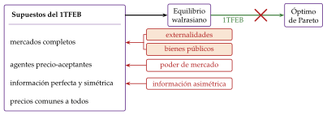
Fuente: elaboración propia a partir de Mas-Colell, Whinston y Green (1995, cap. 16).
Partimos de los supuestos del 1TFEB [ver tema 3.A.22]; los de precio-aceptación e información son los de la lista común de las estructuras de mercado [ver tema 3.A.16] (tabla 1). Los fallos que estudia la teoría son 4:
Poder de mercado (se levanta el supuesto 3): si una empresa no es precio-aceptante, fija un precio por encima del coste marginal y \(\mathrm{RMS}_{XY}=p_X/p_Y\neq\mathrm{RMT}_{XY}\); la pérdida es el triángulo de Harberger [ver tema 3.A.17] [ver tema 3.A.18] [ver tema 3.A.19]. Basta con que los productos estén diferenciados para que cada empresa tenga algo de poder de mercado [ver tema 3.A.18]. Si hay subaditividad de costes (monopolio natural), además, la competencia no es viable [ver tema 3.A.20].
Información asimétrica (se levanta el supuesto 5): si una parte sabe algo que la otra no observa, aparecen la selección adversa y el riesgo moral, y algunos mercados ni siquiera existen, como en el mercado de coches usados de Akerlof [ver tema 3.A.13].
Externalidades (se levantan los mercados completos): una acción afecta directamente al bienestar o a la producción de otro sin pasar por los precios (II.1).
Bienes públicos (se levantan los mercados completos): bienes no rivales y no excluibles, que el mercado provee en cantidad insuficiente (II.2).
| N.º | Supuesto | Qué significa | Si se levanta | Dónde |
|---|---|---|---|---|
| 1 | No saciedad local | cerca de cualquier cesta hay otra que el consumidor prefiere, de modo que gasta toda su renta | un consumidor saciado puede dejar renta sin gastar y el equilibrio puede no ser eficiente | [ver tema 3.A.22] |
| 2 | Mercados completos | todo lo que afecta a la utilidad o a la producción tiene mercado y precio: no hay externalidades ni bienes públicos | Se levanta: externalidades (el efecto externo no tiene mercado ni precio: el coste o el beneficio privado no es el social) y bienes públicos (sin exclusión no hay precio individual: cada uno declara menos de lo que valora, el polizón) | II.1 II.2 |
| 3 | Agentes precio-aceptantes | nadie mueve los precios con sus decisiones (el supuesto de atomicidad de la competencia perfecta, [ver tema 3.A.16]) | poder de mercado: \(p>\mathrm{CMg}\), se produce menos de lo óptimo (triángulo de Harberger) | [ver tema 3.A.17]–[ver tema 3.A.20] |
| 4 | Precios comunes | todos se enfrentan a los mismos precios: no hay impuestos que abran cuñas entre lo que paga el comprador y lo que cobra el vendedor | exceso de gravamen | [ver tema 4.B.9] |
| 5 | Información perfecta y simétrica | todos observan lo que entra en el intercambio: su calidad, su precio y lo que hace cada parte | selección adversa y riesgo moral; hay mercados que desaparecen | [ver tema 3.A.13] |
Fuente: elaboración propia a partir de la tabla de supuestos del 1TFEB de [ver tema 3.A.22] y de Mas-Colell, Whinston y Green (1995, párr. 16.C).
Las externalidades y los bienes públicos tienen una raíz común, que vio Kenneth Arrow (1969): son mercados incompletos. No hay un mercado (ni un precio) para el vertido que recibe la piscifactoría ni para la protección que da la mota a cada vecino, porque los costes de transacción o la imposibilidad de excluir impiden crearlo.
Con información imperfecta o mercados incompletos, Greenwald y Stiglitz (1986) muestran que el equilibrio competitivo es, en general, ineficiente incluso respecto a lo que lograría un planificador con la misma información (ineficiencia restringida): los fallos de mercado son la regla, no la excepción.
Los fallos de mercado son, por tanto, una condición necesaria para intervenir por eficiencia, pero no suficiente: hay que compararlos con los fallos del sector público (bloque III). Además, el sector público puede intervenir por equidad (2TFEB) aunque no haya fallos de mercado.
Como el poder de mercado y la información asimétrica tienen sus propios temas, nos centramos en las externalidades y los bienes públicos, los 2 fallos del título.
Recapitulación: el mercado es eficiente si los precios recogen todos los costes y valoraciones; los fallos de mercado son las situaciones en que no lo hacen. Pasamos al segundo bloque: las externalidades y los bienes públicos.
II. Externalidades y bienes públicos
Idea: una vez visto qué rompe cada fallo de mercado, estudiamos los 2 que son objeto de esta exposición. Para cada uno, 3 pasos:
qué es;
por qué el mercado se aleja del óptimo;
cómo puede intervenir el sector público.
Conclusión anticipada: en los 2 casos el mercado falla porque falta un precio. La intervención consiste en crearlo o en sustituirlo, y su gran obstáculo es la información.
II.1. Externalidades
En el cante:
definición y clasificación con la acería y la piscifactoría (1′);
la condición de óptimo en equilibrio general en palabras y el gráfico de la externalidad (gráfico 2) (2′);
la justificación (0′30″);
Pigou y los estándares como capas del mismo dibujo, que el documento separa en 2 gráficos (gráficos 3 y 4) (2′);
Coase sobre ese mismo dibujo, con sus áreas (gráfico 5) (1′30″);
el mercado de derechos con las instalaciones en escalones (gráfico 7), Weitzman de palabra y el dato del RCDE (1′30″);
la integración (0′30″).
Las tablas de excedentes y las condiciones de primer orden no se cantan.
II.1.1. Definición y clasificación
Hay una externalidad cuando el bienestar de un consumidor o las posibilidades de producción de una empresa dependen directamente de las acciones de otro agente (Mas-Colell, Whinston y Green, 1995, cap. 11.B). «Directamente» quiere decir sin pasar por los precios. «El que venga detrás, que arree», dice el refrán: quien la genera no la paga.
Por eso Jacob Viner (1931) distingue las externalidades tecnológicas, que son un fallo de mercado, de las pecuniarias, que se transmiten por los precios (Scitovsky, 1954) [ver tema 3.A.16].
Ejemplo de externalidad pecuniaria: si el whisky se pone de moda y sube su precio, los antiguos consumidores pierden y los productores ganan, pero es una transferencia y el equilibrio sigue siendo eficiente.1
Con una externalidad tecnológica, los precios solo recogen la valoración de quien consume y el coste de quien produce, no el efecto sobre terceros. El agente decide sin tenerlo en cuenta:
produce o consume demasiado si la externalidad es negativa;
demasiado poco si es positiva.
Clasificación:
según el signo, positivas (economías externas) o negativas (deseconomías externas);
según quién la genera, en la producción o en el consumo (tabla 2);
según si se agotan, agotables (lo que recibe uno no lo recibe otro) o no agotables (todos sufren el mismo ruido): estas últimas son un «mal público» (Baumol y Oates, 1988, cap. 3), y enlazan con los bienes públicos.
| Positiva | Negativa | |
|---|---|---|
| En la producción | El apicultor cuyas abejas polinizan el huerto vecino | La acería que vierte al río del que vive la piscifactoría |
| En el consumo | Quien se vacuna reduce el contagio de los demás | El ruido del vecino; el tráfico |
Fuente: elaboración propia a partir de Meade (1952) y Mas-Colell, Whinston y Green (1995, cap. 11).
II.1.2. Diferencia entre la asignación competitiva y la asignación óptima
a) Idea
Introducimos una externalidad en la economía de intercambio para ver qué condición de Pareto deja de cumplir el mercado, y después pasamos al equilibrio parcial, que es el que se dibuja.
b) Modelo
i) Supuestos
La economía de intercambio de la caja de Edgeworth [ver tema 3.A.21]: 2 consumidores, \(A\) y \(B\), y 2 bienes, \(X\) e \(Y\), con dotaciones totales \(\overline{X}\) e \(\overline{Y}\).
El consumo de \(X\) por \(A\) entra en la utilidad de \(B\): \(U_A(X_A,Y_A)\) y \(U_B(X_B,Y_B,X_A)\), con \(\partial U_B/\partial X_A<0\) si la externalidad es negativa (el humo del tabaco de \(A\)) y \(\partial U_B/\partial X_A>0\) si es positiva.
ii) Desarrollo
Óptimo de Pareto: el planificador maximiza la utilidad de \(A\) sin empeorar a \(B\), \[\begin{array}{rl}\displaystyle \max_{X_A,Y_A,X_B,Y_B} & \displaystyle U_A(X_A,Y_A) \\ \text{s.a.} & U_B(X_B,Y_B,X_A)=\overline{U}_B \\ & X_A+X_B=\overline{X} \\ & Y_A+Y_B=\overline{Y}\end{array}\] y de las condiciones de primer orden (anexo B) se obtiene \[\tag{2} \mathrm{RMS}^A_{XY}+\frac{\partial U_B/\partial X_A}{\partial U_B/\partial Y_B}=\mathrm{RMS}^B_{XY}.\]
Interpretación: el valor social de una unidad más de \(X\) en manos de \(A\) es lo que vale para \(A\) más lo que vale (o cuesta) para \(B\), en unidades de \(Y\). En el óptimo, ese valor social se iguala al de \(X\) en manos de \(B\).
Equilibrio competitivo: cada consumidor iguala su propia \(\mathrm{RMS}\) al precio relativo, \(\mathrm{RMS}^A_{XY}=\mathrm{RMS}^B_{XY}=p_X/p_Y\). Falta el segundo término de (2): con una externalidad negativa, \(A\) consume demasiado \(X\).
iii) Implicaciones
El mercado iguala las valoraciones privadas, no las sociales: el equilibrio competitivo no es óptimo de Pareto.
Si \(A\) pagara por \(X\) un precio \(p_X+t\), con \(t=-p_Y\,\frac{\partial U_B/\partial X_A}{\partial U_B/\partial Y_B}\) evaluado en el óptimo, su elección cumpliría (2): es el impuesto pigouviano en equilibrio general, que veremos en equilibrio parcial.
El análisis riguroso de las externalidades es de equilibrio general, pero en la pizarra se usa el equilibrio parcial, que es más sencillo. Con utilidad cuasilineal en el numerario, la \(\mathrm{RMS}\) es la disposición marginal a pagar y la condición (2) se convierte en «beneficio marginal privado más beneficio marginal externo igual a coste marginal». Conviene decirlo al pasar de un enfoque a otro, para que el tribunal vea que es el mismo resultado. El anexo B hace también la versión con la externalidad en la producción (la acería y la piscifactoría como las 2 empresas).
c) Extensiones: la externalidad en la producción en equilibrio parcial
Pasamos al ejemplo del río, que usaremos en el resto del apartado: una acería competitiva, precio-aceptante al precio \(\overline{p}\), vierte residuos al río del que vive una piscifactoría.
El mismo término adicional de (2) es ahora el coste marginal externo, \(\mathrm{CMgE}\), el daño que una tonelada más de acero causa a la piscifactoría. El coste marginal social suma al privado ese daño:
\[\mathrm{CMgS}(q)=\mathrm{CMgP}(q)+\mathrm{CMgE}(q)\tag{3}\]
La acería produce \(q^c\), donde \(\overline{p}=\mathrm{CMgP}(q^c)\); el óptimo es \(q^*\), donde \(\overline{p}=\mathrm{CMgS}(q^*)\) (gráfico 2).
Como \(\mathrm{CMgE}>0\), \(q^c>q^*\): sobreproducción.
Cada unidad entre \(q^*\) y \(q^c\) cuesta a la sociedad más de lo que vale; la suma de esas diferencias es la pérdida de eficiencia, el triángulo \(E\).
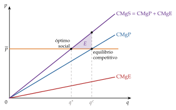
Fuente: elaboración propia a partir de Pigou (1920).
Con una externalidad positiva ocurre lo contrario: el beneficio marginal social supera al privado y el mercado produce demasiado poco.
Recapitulación: con externalidades, el mercado iguala costes y valoraciones privados, y la diferencia con los sociales, \(\mathrm{CMgE}\), es la medida del fallo. ¿Cómo puede el sector público hacer que se tenga en cuenta?
II.1.3. Posibilidades de intervención por parte del sector público
Idea y justificación de la intervención
Idea: con externalidades no hace falta que el sector público produzca nada, como suele hacer con los bienes públicos. Basta con que los agentes internalicen el efecto externo, de modo que los precios que ven recojan todos los costes y beneficios, y dejar después actuar al mercado.
Justificación: sin intervención, la acería no paga el daño que causa y produce \(q^c>q^*\). Hay 3 razones por las que el mercado no lo arregla solo:
falta un mercado: nadie vende ni compra el derecho a verter al río, así que no hay precio (Arrow, 1969);
costes de transacción: cuando los afectados son muchos (todos los que respiran el aire de una ciudad), negociar es imposible y cada uno espera que negocien los demás: el polizón aparece también aquí;
derechos de propiedad sin definir: sin saber quién tiene derecho al río limpio, nadie puede venderlo ni exigir compensación; definirlos y hacerlos cumplir es tarea del sector público (Coase, 1960).
El objetivo no es eliminar la externalidad, sino llevarla a su nivel óptimo, en el que el beneficio de reducirla un poco más iguala su coste: la contaminación óptima no suele ser cero. Y antes de intervenir hay que comparar el fallo del mercado con el de la intervención (bloque III).
Vemos 5 mecanismos, de más a menos intervención pública:
los instrumentos pigouvianos (precios);
los estándares (cantidades);
la negociación de Coase (derechos de propiedad);
los mercados de derechos de emisión que inspira (cantidades que se negocian);
la integración de quien causa el daño y quien lo sufre.
Instrumentos pigouvianos: impuestos y subvenciones
a) Idea
b) Modelo
La acería maximiza \(\overline{p}\,q-C(q)-t^*q\); su condición de primer orden es \(\overline{p}=\mathrm{CMgP}(q)+t^*\), que se cumple justo en \(q^*\), porque allí \(\overline{p}=\mathrm{CMgP}(q^*)+\mathrm{CMgE}(q^*)\).
Gráficamente, el impuesto desplaza el coste marginal privado hasta \(\mathrm{CMgP}+t^*\), que corta al precio en el óptimo (gráfico 3). Las áreas son las del gráfico de la externalidad:
la acería se queda con \(A\), el excedente entre el precio y \(\mathrm{CMgP}+t^*\) hasta \(q^*\);
el Estado recauda \(B+C\) (\(=t^*q^*\)), la franja entre \(\mathrm{CMgP}\) y \(\mathrm{CMgP}+t^*\);
la piscifactoría sufre \(C\), el daño de las unidades hasta \(q^*\);
y se recupera \(E\), la pérdida de eficiencia de las unidades entre \(q^*\) y \(q^c\).
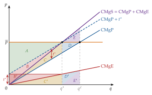
Fuente: elaboración propia a partir de Pigou (1920) y Baumol y Oates (1988, cap. 4). Las áreas con prima, bajo \(\mathrm{CMgE}\), miden lo mismo que las que llevan su letra sin prima: el daño a la piscifactoría es \(C'+D'+E'=C+D+E\) y la recaudación, \(t^*q^*=B'+C'=B+C\).
Con una externalidad positiva, la solución simétrica es una subvención por unidad igual al beneficio marginal externo en el óptimo.
Bienestar (tabla 3): el impuesto recupera la pérdida \(E\) y, además, recauda \(B+C\), que puede sustituir a otros impuestos distorsionantes: es el doble dividendo [ver tema 4.B.13].
| Sin impuesto | Con impuesto | Variación | |
| Excedente del productor (acería) | \(A+B+C+D\) | \(A\) | \(-(B+C+D)\) |
| Daño a la piscifactoría | \(-(C+D+E)\) | \(-C\) | \(+(D+E)\) |
| Recaudación | — | \(B+C\) | \(+(B+C)\) |
| Bienestar total | \(A+B-E\) | \(A+B\) | \(+E\) |
Fuente: elaboración propia. Las letras son las áreas del gráfico 3; como la demanda a la que se enfrenta la acería es horizontal en \(\overline{p}\), no hay excedente del consumidor que medir.
c) Valoración
Ventaja: deja que la acería decida cuánto reducir, y con varias empresas la reducción se concentra donde es más barata.
Limitaciones:
el sector público necesita conocer \(\mathrm{CMgE}(q^*)\), es decir, el daño y la cantidad óptima, que no observa: vuelve el problema de revelación de preferencias;
si el daño varía según dónde y cuándo se vierte, un impuesto uniforme no basta;
si la acería tiene poder de mercado, ya produce menos de lo óptimo y el impuesto óptimo es menor que el daño marginal (Buchanan, 1969): es un caso de second best [ver tema 3.A.22].
Estándares
a) Idea
El sector público fija directamente la cantidad máxima de la actividad contaminante (o de las emisiones), \(\overline{q}=q^*\): cuotas no transferibles, límites de vertido, restricciones de tráfico por matrícula.
b) Modelo
Sobre el mismo gráfico de la externalidad, la oferta de la acería se quiebra en \(\overline{q}\): por debajo sigue su \(\mathrm{CMgP}\) y en \(\overline{q}\) se hace vertical (gráfico 4).
Con información completa y una sola empresa, el resultado es el mismo que con el impuesto: se produce \(q^*\), la piscifactoría sufre solo \(C\) y se recupera \(E\).
Cambia el reparto: no hay recaudación y la acería se queda con \(A+B+C\), todo el excedente entre el precio y \(\mathrm{CMgP}\) hasta \(q^*\). La parte \(B+C\), que con el impuesto iba al Estado, es una renta de escasez que crea la cuota.
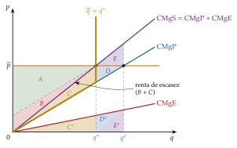
Fuente: elaboración propia a partir de Baumol y Oates (1988, cap. 4).
Bienestar (tabla 4): el bienestar total es el mismo que con el impuesto, \(A+B\); solo cambia quién se queda \(B+C\).
| Sin estándar | Con estándar | Variación | |
| Excedente del productor (acería) | \(A+B+C+D\) | \(A+B+C\) | \(-D\) |
| Daño a la piscifactoría | \(-(C+D+E)\) | \(-C\) | \(+(D+E)\) |
| Bienestar total | \(A+B-E\) | \(A+B\) | \(+E\) |
Fuente: elaboración propia. Áreas del gráfico 4.
c) Valoración
Ventaja: certeza sobre la cantidad, útil cuando un umbral de daño es peligroso.
Limitaciones:
exige la misma información que el impuesto (\(q^*\));
con varias empresas es caro: impone a todas la misma reducción, aunque a unas les cueste mucho más reducir que a otras. El impuesto, en cambio, reduce allí donde es más barato. Esta ventaja de los precios es la que recogen los mercados de derechos.
Negociación: el teorema de Coase
a) Idea
Ronald Coase (1960) critica el enfoque de Pigou:3
el daño es recíproco: si se protege a la piscifactoría, se perjudica a la acería;
si las partes pueden negociar, no hace falta que el Estado calcule nada: basta con que defina quién tiene derecho al río.
«Más vale un mal acuerdo que un buen pleito», dice el refrán.
b) Modelo
i) Supuestos
Derechos de propiedad bien definidos (o a verter, de la acería, o al río limpio, de la piscifactoría) y que se hacen cumplir.
Costes de transacción nulos e información completa: cada parte conoce el beneficio de la otra.
Sin efectos renta (utilidad cuasilineal en el dinero).
ii) Desarrollo
Volvemos al gráfico de la externalidad, con el precio \(\overline{p}\), \(\mathrm{CMgP}\), \(\mathrm{CMgS}\) y las mismas áreas, de \(A\) a \(E\) (gráfico 5). Con cada unidad, la acería gana la distancia entre \(\overline{p}\) y \(\mathrm{CMgP}\) y la piscifactoría pierde \(\mathrm{CMgE}\), la distancia entre \(\mathrm{CMgS}\) y \(\mathrm{CMgP}\):
si nadie le pone límites, la acería produce \(q^c\), donde \(\overline{p}=\mathrm{CMgP}\);
el óptimo es \(q^*\), donde lo que gana la acería con la última unidad, \(\overline{p}-\mathrm{CMgP}\), iguala el daño que causa, \(\mathrm{CMgE}\).
Si el derecho a verter es de la acería, se parte de \(q^c\). Entre \(q^*\) y \(q^c\), la acería renuncia a \(D\) si reduce la producción y la piscifactoría se ahorra \(D+E\):
a la piscifactoría le compensa pagar a la acería para que produzca \(q^*\);
el pago está entre \(D\), lo mínimo que acepta la acería, y \(D+E\), lo máximo que paga la piscifactoría.
Si el derecho al río limpio es de la piscifactoría, se parte de cero. La acería le compra el permiso para cada unidad, y le compensa hasta \(q^*\): más allá, lo que gana con una unidad es menor que el daño que tiene que pagar. Hasta \(q^*\):
la acería gana \(A+B+C\) y causa un daño \(C\);
el pago está entre \(C\), lo mínimo que acepta la piscifactoría, y \(A+B+C\), lo máximo que paga la acería.
En los 2 casos se produce \(q^*\) y el bienestar total es \(A+B\), como con el impuesto o el estándar. Los derechos y el poder de negociación de cada parte solo deciden quién se queda la ganancia [ver tema 3.A.14].4
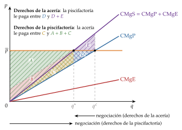
Fuente: elaboración propia a partir de Coase (1960).
iii) Implicaciones
George Stigler (1966, 113) resumió el argumento en el teorema de Coase (el nombre no es de Coase):
si los derechos de propiedad están bien definidos y los costes de transacción son nulos,
la negociación voluntaria lleva a un resultado eficiente, \(q^*\), sea quien sea el titular de los derechos;
la asignación de los derechos solo cambia el reparto: quién paga a quién.
En ese mundo, Pigou y Coase llegan al mismo \(q^*\); lo que cambia es quién necesita la información (el Estado o las partes) y quién se queda las rentas.
c) Valoración
Ventaja: el Estado no necesita conocer el daño; le basta definir los derechos y hacerlos cumplir.
Limitaciones, que son las de los supuestos:
costes de transacción: con muchos afectados (la contaminación de una ciudad), negociar es imposible y vuelve el polizón. El propio Coase insistía en que el mundo real es el de los costes positivos, en el que la asignación de los derechos sí importa [ver tema 3.A.15];
información asimétrica: si cada parte conoce solo su coste o su daño, la negociación puede fracasar, y no hay mecanismo que garantice siempre un acuerdo eficiente (Myerson y Satterthwaite, 1983);
efectos renta: sin utilidad cuasilineal, quien recibe los derechos es más rico y puede demandar otro nivel de la externalidad, de modo que el resultado eficiente sí depende del reparto.5
Mercados de derechos de emisión (cap and trade)
a) Idea
La idea de Coase de crear derechos y dejar que se intercambien inspira los mercados de derechos de emisión, propuestos por John H. Dales (1968):
el sector público fija el total de emisiones permitidas, \(\overline{E}\) (cap);
lo reparte en derechos, gratis o en subasta;
y deja que las empresas los compren y vendan (trade) a un precio \(p_E\).
El resultado es que reducen sus emisiones las instalaciones a las que menos les cuesta hacerlo, y la sociedad alcanza el tope al menor coste posible (gráfico 6).
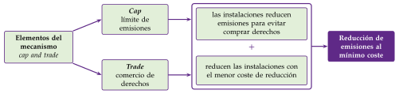
Fuente: elaboración propia a partir de Energía y Sociedad (2022).
b) Modelo
Cómo funciona, paso a paso. Pensemos en 5 instalaciones ordenadas de menor a mayor coste marginal de reducir una tonelada de emisiones, cada una con un escalón de reducción posible (gráfico 7). El mercado funciona en 3 pasos:
el tope fija la reducción: si sin regulación se emitiría más que \(\overline{E}\), las instalaciones tienen que reducir entre todas la diferencia, \(R_0\);
el precio lo fija la última reducción necesaria: el precio del derecho, \(p_E\), es el coste marginal de la instalación que hace la última tonelada de reducción que exige el tope, aquí la 4, que reduce solo lo que falta para llegar a \(R_0\) y le da igual reducir que comprar;
cada instalación compara su coste con el precio: las de coste menor que \(p_E\) (de la 1 a la 3) reducen todo lo que pueden y venden los derechos que les sobran, porque reducir les cuesta menos de lo que cobran por ellos; la de coste mayor (la 5) no reduce y compra derechos, porque le sale más barato que reducir.
Nadie ha tenido que decir a cada instalación cuánto reducir: el precio reparte la reducción y la lleva allí donde es más barata.
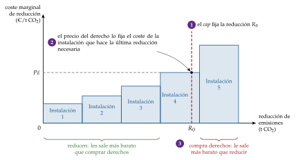
Con costes continuos, el mismo resultado se escribe con 2 empresas. Cada empresa \(j\) reduce sus emisiones en \(r_j\) con un coste \(C_j(r_j)\) creciente y convexo, y reduce hasta que su coste marginal de reducción iguala el precio del derecho (gráfico 8): \[\tag{5} \mathrm{CMgR}_1(r_1)=\mathrm{CMgR}_2(r_2)=p_E.\]
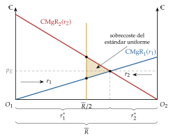
Fuente: elaboración propia a partir de Montgomery (1972).
Es la misma condición que resuelve el problema de reducir las emisiones totales al menor coste posible: la reducción se hace donde es más barata.
W. David Montgomery (1972) demuestra que el mercado alcanza ese mínimo cualquiera que sea el reparto inicial de los derechos, que solo cambia quién paga a quién: es el resultado de Coase en un mercado creado por el Estado.
c) Extensiones: precios frente a cantidades
El impuesto fija el precio y deja que el mercado decida la cantidad; el mercado de derechos fija la cantidad y deja que el mercado decida el precio. Con información completa son equivalentes; con incertidumbre, no.
Martin Weitzman (1974) los compara cuando el regulador no conoce con certeza los costes de reducir las emisiones:
con un impuesto, el error se traslada a la cantidad: si reducir resulta más caro de lo previsto, se reduce menos de lo óptimo;
con una cuota, el error se traslada al coste: se reduce lo previsto, cueste lo que cueste.
Resultado: conviene fijar la cantidad si el daño marginal crece más deprisa que el coste marginal de reducir (umbrales peligrosos: lo que importa es no pasarse), y el precio en el caso contrario (daño marginal casi constante: lo que importa es no imponer costes desorbitados).
Por eso se usan sistemas híbridos, como un mercado de derechos con precio mínimo y máximo (Roberts y Spence, 1976).
d) Evidencia empírica: el RCDE de la UE
El ejemplo más conocido es el Régimen de Comercio de Derechos de Emisión de la UE (RCDE UE), creado por la Directiva 2003/87/CE (Parlamento Europeo y Consejo de la Unión Europea, 2003):
es el primer mercado internacional de emisiones y funciona desde 2005 en fases sucesivas; la segunda (2008-2012) coincidió con el primer periodo de compromiso del Protocolo de Kioto, y la cuarta va de 2021 a 2030 (Comisión Europea, 2026a);
más que el teorema de Coase, aplica la propuesta de Dales y Montgomery: un tope total y derechos negociables;
el tope baja cada año, un 4,3 % anual entre 2024 y 2027 y un 4,4 % desde 2028 (Comisión Europea, 2025).
Resultados: según la Comisión, desde 2005 ha reducido a la mitad las emisiones de los sectores que cubre (en 2025 bajaron otro 1,3 %) y va camino del objetivo de \(-62\) % en 2030 respecto a 2005 (Comisión Europea, 2026d). El precio lo fija el mercado: tras pasar de unos 6 €/t en 2017 a más de 80 €/t en 2023, en octubre de 2026 se adjudicaba a unos 85 €/t (European Energy Exchange, 2026).
La lección de Weitzman se ve en su diseño:
desde 2019, una reserva de estabilidad del mercado retira derechos de las subastas cuando el excedente en circulación supera ciertos umbrales (entre septiembre de 2026 y agosto de 2027, unos 190 millones) (Comisión Europea, 2026e): es una corrección por precios dentro de un sistema de cantidades;
desde 2028 habrá un segundo mercado, el RCDE 2, para los combustibles de edificios y transporte por carretera, que se aplica aguas arriba, a los proveedores de combustible (Parlamento Europeo y Consejo de la Unión Europea, 2026; Comisión Europea, 2026b);
para que el precio del carbono no se limite a desplazar la producción fuera de la UE (fuga de carbono), el Mecanismo de Ajuste en Frontera por Carbono (MAFC; CBAM en inglés) cobra desde el 1 de enero de 2026 a las importaciones de cemento, acero, aluminio, fertilizantes, electricidad e hidrógeno el precio que pagan los productores europeos (Parlamento Europeo y Consejo de la Unión Europea, 2023); en el tercer trimestre de 2026 el certificado costaba 82,32 € por tonelada (Comisión Europea, 2026c) [ver tema 3.B.31].
e) Valoración
Ventajas: alcanza el objetivo de emisiones al menor coste sin que el Estado conozca los costes de cada empresa, y da certeza sobre la cantidad.
Limitaciones: el precio es volátil (lo que desanima la inversión limpia), el reparto gratuito de derechos crea rentas y presiones de los sectores afectados, y si cubre solo una parte del mundo, hay fuga de carbono.
Integración
Si la acería y la piscifactoría tienen un mismo dueño, este maximiza el beneficio conjunto y tiene en cuenta el daño de la acería sobre la piscifactoría: la externalidad se internaliza dentro de la empresa (Meade, 1952; Varian, 2016, cap. 34).
Es la solución de mercado cuando negociar es caro y los afectados son pocos: la frontera de la empresa se mueve para ahorrar costes de transacción [ver tema 3.A.15].
Comparación de los mecanismos
Todos llevan la actividad a \(q^*\), no a cero; se diferencian en la información que necesita el Estado y en el reparto del bienestar (tabla 5).
| Mecanismo | Qué fija el Estado | Qué información necesita | Quién se queda la renta |
|---|---|---|---|
| Impuesto pigouviano | el precio (\(t^*\)) | el daño marginal en el óptimo | el Estado (recaudación \(B+C\)) |
| Estándar | la cantidad (\(\overline{q}\)) | la cantidad óptima y los costes de cada empresa | la empresa (renta de escasez) |
| Coase | los derechos de propiedad | ninguna sobre el daño | según quién tenga los derechos y el poder de negociación |
| Derechos de emisión | la cantidad total (\(\overline{E}\)) | el daño total, no los costes de cada empresa | el Estado si subasta; las empresas si los regala |
| Integración | nada | ninguna | el propietario común |
Fuente: elaboración propia a partir de Baumol y Oates (1988) y Weitzman (1974).
Recapitulación de las externalidades: el fallo es que falta el precio del efecto externo; los mecanismos lo crean (impuesto, derechos) o fijan la cantidad que habría elegido el mercado con ese precio (estándar), y los más robustos son los que menos información piden al Estado. Pasamos al segundo fallo del título, en el que no basta con poner un precio: los bienes públicos.
II.2. Bienes públicos
En el cante:
la tabla de rivalidad y exclusión con club y comunes (1′30″);
la condición de Samuelson escrita como función clave y el gráfico de Bowen con la suma vertical y la infraprovisión (gráfico 10), con el polizón como dilema del prisionero (3′);
la provisión pública: las 2 cuestiones y la capacidad de pago, en una frase cada una (0′30″);
Lindahl (1′);
Clarke-Groves con la tabla de los 3 vecinos (tabla 8) (1′30″);
las otras líneas, en una frase cada una (0′30″).
El gráfico de equilibrio general de Samuelson (gráfico 9) es para preguntas del tribunal.
II.2.1. Definición y clasificación
Pasamos al segundo fallo. Un bien privado, como una manzana, tiene 2 propiedades:
es rival: lo que consume uno no lo puede consumir otro;
es excluible: se puede impedir su consumo a quien no paga.
Un bien público puro no tiene ninguna de las 2 (Samuelson, 1954):
es no rival: su consumo por uno no reduce el de los demás, porque el coste marginal de un usuario más es nulo;
es no excluible: no se puede impedir su consumo, o es muy caro hacerlo.
Son ejemplos la defensa nacional, el alumbrado de una calle, el conocimiento básico o la mota que protege de las riadas a todo el pueblo ribereño.
Cruzando las 2 propiedades, Vincent y Elinor Ostrom (V. Ostrom y Ostrom, 1977) clasifican los bienes en 4 grupos (tabla 6):
bienes privados: rivales y excluibles;
bienes de club: no rivales hasta que se congestionan, pero excluibles (la televisión de pago, una autopista de peaje). James Buchanan (1965) estudia su tamaño óptimo: se añaden socios hasta que el ahorro en la cuota de cada uno iguala el coste de la congestión;
recursos comunes (comunales): rivales pero no excluibles (caladeros, pastos, acuíferos, la pesca del río). Su problema es el contrario al del bien público: no la infraprovisión, sino la sobreexplotación, porque cada usuario ignora lo que su uso quita a los demás. Es la tragedia de los comunes (Hardin, 1968); «lo que es del común es de ningún», dice el refrán;
bienes públicos puros: ni rivales ni excluibles.
| Rival | No rival | |
|---|---|---|
| Excluible | Bienes privados (alimentos, ropa) |
Bienes de club (televisión de pago, autopista de peaje) |
| No excluible | Recursos comunes (caladeros, pastos, la pesca del río) |
Bienes públicos puros (defensa, alumbrado, la mota) |
Fuente: elaboración propia a partir de V. Ostrom y Ostrom (1977).
Los recursos comunes se gestionan limitando el uso (cuotas de captura, vedas), definiendo derechos o, como mostró Elinor E. Ostrom (1990), con reglas de la propia comunidad: el Tribunal de las Aguas de Valencia reparte desde hace siglos el agua de riego de la huerta (anexo F).
El caso inverso es la tragedia de los anticomunes (Heller, 1998): cuando demasiados titulares pueden excluir a los demás de un recurso (muchas patentes que bloquean una investigación (Heller y Eisenberg, 1998)), el recurso se infrautiliza.
La frontera no es nítida:
casi ningún bien es público puro: una carretera es no rival hasta que se congestiona;
muchos bienes «públicos» los ha provisto el sector privado cuando ha encontrado la forma de excluir.6
Tampoco hay que confundirlos con los bienes preferentes de Richard Musgrave (1959) (educación obligatoria, sanidad), que el sector público provee porque juzga que los individuos los infravaloran, no por su tecnología de consumo.
En el resto del apartado nos centramos en el bien público puro.
II.2.2. Diferencia entre la asignación competitiva y la asignación óptima
a) Idea
Paul Samuelson (1954) obtiene la condición de eficiencia con un bien público y muestra que el mercado no la cumple. Es el problema del planificador (el óptimo de Pareto), no el resultado del mercado.
b) Modelo
i) Supuestos
2 consumidores, \(A\) y \(B\); un bien privado, \(X\), y un bien público puro, \(G\), que los 2 consumen en la misma cantidad: \(G_A=G_B=G\).
La frontera de posibilidades de producción es \(T(X,G)=0\), con \(X=X_A+X_B\).
ii) Desarrollo
Óptimo de Pareto (problema del planificador): \[\begin{array}{rl}\displaystyle \max_{X_A,X_B,G} & \displaystyle U_A(X_A,G) \\ \text{s.a.} & U_B(X_B,G)=\overline{U}_B \\ & T(X_A+X_B,G)=0\end{array}\] De las condiciones de primer orden (anexo C) se obtiene la condición de Samuelson:
\[\mathrm{RMS}^A_{GX}+\mathrm{RMS}^B_{GX}=\mathrm{RMT}_{GX}\tag{6}\]
Interpretación: como todos consumen la misma unidad de \(G\), su valor social es la suma de lo que cada uno daría de bien privado por ella, y debe igualar lo que cuesta producirla.
Con un bien privado se igualan las valoraciones individuales entre sí (1); con uno público, se suman.
Desarrollo gráfico (gráfico 9, a partir de Samuelson (1955)):
arriba, la FPP y la curva de indiferencia \(\overline{U}_B\) en el plano \((G,X)\). Para cada \(G\), la distancia vertical entre la FPP y \(\overline{U}_B\) es el bien privado que queda para \(A\) después de dejar a \(B\) en su utilidad: es la frontera de posibilidades de consumo de \(A\), \(\mathrm{FPC}_A\), que se lleva al gráfico de abajo;
\(A\) elige el punto de \(\mathrm{FPC}_A\) más alto en su mapa de indiferencia, \(E\), donde su curva de indiferencia \(U_A^*\) es tangente a \(\mathrm{FPC}_A\);
como la pendiente de \(\mathrm{FPC}_A\) es la de la FPP menos la de \(\overline{U}_B\), la tangencia dice \(\mathrm{RMS}^A_{GX}=\mathrm{RMT}_{GX}-\mathrm{RMS}^B_{GX}\): la condición de Samuelson;
en el óptimo los 2 consumen la misma cantidad, \(G^*\), pero la valoran de forma distinta; con un bien privado, cada uno consume distinto y lo valora igual en el margen.
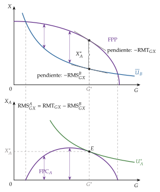
Fuente: elaboración propia a partir de Samuelson (1955).
Equilibrio con aportaciones voluntarias: si cada uno compra (o aporta) el bien público por su cuenta al precio \(p_G\), solo tiene en cuenta su propia valoración y deja de aportar cuando \(\mathrm{RMS}^i_{GX}=p_G/p_X=\mathrm{RMT}_{GX}\). Si los 2 aportan, en el margen \[\tag{7} \mathrm{RMS}^A_{GX}+\mathrm{RMS}^B_{GX}=2\,\mathrm{RMT}_{GX}>\mathrm{RMT}_{GX}:\] una unidad más de \(G\) vale para la sociedad más de lo que cuesta, pero nadie la compra.
iii) Implicaciones: el polizón y la infraprovisión
El mercado provee \(G\) en cantidad insuficiente: infraprovisión. Cada uno se beneficia de lo que aportan los demás sin pagarlo: es el polizón (free rider). «Unos por otros, la casa sin barrer».
En su forma más simple es un dilema del prisionero [ver tema 3.A.14]. 2 vecinos deciden si contribuyen a una mota que cuesta 120 y que cada uno valora en 100; si solo contribuye uno, la paga entera (tabla 7):
no contribuir es una estrategia dominante para los 2: si el otro contribuye, gano 100 en vez de 40; si no, 0 en vez de \(-20\);
el equilibrio es que nadie contribuye y no hay mota, aunque los 2 estarían mejor pagándola a medias.
| Contribuir | No contribuir | |
| Contribuir | \((40,40)\) | \((-20,\underline{100})\) |
| No contribuir | \((\underline{100},-20)\) | \((\underline{0},\underline{0})\) |
Fuente: elaboración propia. La mota cuesta 120 y cada vecino la valora en 100; si contribuyen los 2, pagan 60 cada uno. Subrayadas, las mejores respuestas; sombreado, el equilibrio.
c) Extensiones
i) El análisis en equilibrio parcial de Bowen
Howard Bowen (1943), una década antes que Samuelson, da la versión de equilibrio parcial, la que se dibuja en la pizarra (gráfico 10). Con utilidad cuasilineal, \(\mathrm{RMS}^i_{GX}(G)\) es la disposición marginal a pagar de \(i\) por el bien público, decreciente en \(G\).
Como todos consumen la misma cantidad, la valoración social es la suma vertical de las disposiciones a pagar: para cada \(G\) se suman los precios, no las cantidades.
Con un bien privado, en cambio, la demanda de mercado es la suma horizontal: para cada precio se suman las cantidades.
La suma vertical tiene un vértice donde la curva de un consumidor llega a cero; solo es una recta si todas las curvas cortan el eje de abscisas en el mismo punto.
El óptimo, \(G^*\), está donde la suma corta al coste marginal: \(\mathrm{RMS}^A_{GX}(G^*)+\mathrm{RMS}^B_{GX}(G^*)=\mathrm{CMg}_G\), que es la condición de Samuelson (6).
Si los consumidores declaran valoraciones menores que las verdaderas, \(\widetilde{\mathrm{RMS}}{}^i_{GX}(G)\), la suma declarada queda por debajo y se provee \(\tilde{G}<G^*\); la pérdida es el triángulo entre la suma verdadera y \(\mathrm{CMg}_G\) de \(\tilde{G}\) a \(G^*\).
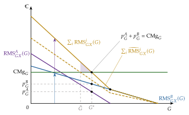
Fuente: elaboración propia a partir de Bowen (1943).
ii) La provisión privada como equilibrio de Nash
Con más detalle, el equilibrio con aportaciones voluntarias es un equilibrio de Nash [ver tema 3.A.14]. Cada consumidor \(i\) tiene una renta \(\overline{W}_i\) y aporta \(g_i\geq0\) al bien público, \(G=g_A+g_B\); con \(p_X=p_G=1\), \(A\) resuelve \[\begin{array}{rl}\displaystyle \max_{g_A} & \displaystyle U_A(\overline{W}_A-g_A,\;g_A+g_B) \\ \text{s.a.} & g_A\geq0\end{array}\]
Si aporta, \(\mathrm{RMS}^A_{GX}=1\). Su función de reacción \(g_A=R_A(g_B)\) es decreciente: si el otro aporta más, él aporta menos. Las aportaciones son sustitutos estratégicos.
En el equilibrio de Nash, \(G^{\mathrm{N}}<G^*\) (el gráfico con las funciones de reacción está en el anexo D).
El modelo tiene 3 resultados conocidos:
concentración: en equilibrio suelen aportar solo los que más valoran el bien (o los más ricos), y los demás aportan cero;
neutralidad: redistribuir renta entre quienes aportan no cambia \(G^{\mathrm{N}}\) (Warr, 1983; Bergstrom, Blume y Varian, 1986);
expulsión: si el Estado provee \(G\) con impuestos de suma fija sobre quienes aportan, estos reducen sus aportaciones en la misma cuantía. Como en la realidad la expulsión es menor, James Andreoni (1990) añade a la utilidad el placer de dar (warm glow).
d) Evidencia empírica
En los experimentos de bienes públicos, los participantes aportan al principio entre el 40 y el 60 % de su dotación, mucho más que el cero que predice el modelo, pero las aportaciones caen al repetir el juego (Ledyard, 1995): el polizón aparece, aunque no tan puro como en la teoría.
e) Valoración
La condición de Samuelson dice qué es eficiente, pero no cómo averiguarlo: las \(\mathrm{RMS}^i_{GX}\) son información privada.
El polizón tiene otra cara, el problema de la revelación de preferencias: si lo que paga cada uno depende de cuánto dice valorar el bien, a todos les conviene decir que lo valoran poco. Es la dificultad que tiene que resolver la intervención.
II.2.3. Posibilidades de intervención del sector público: provisión pública
Idea y justificación
Con bienes públicos no basta corregir un precio: no hay mercado que corregir. La respuesta es la provisión pública, que no exige producción pública: el Estado puede pagar a una empresa privada para que construya la mota.
El sector público tiene 2 ventajas:
puede guiarse por la valoración social, la suma de (6);
tiene el monopolio de la coacción, así que puede financiar el bien con impuestos obligatorios y acabar con el polizón en la financiación.
Pero tiene que responder 2 preguntas:
cuánto proveer, para lo que necesita conocer las valoraciones;
cómo repartir el coste.
Veamos 3 respuestas: según la capacidad de pago, según el beneficio (Lindahl) y con un mecanismo que haga revelar la verdad (Clarke-Groves).
Según la capacidad de pago
El coste se reparte según la renta (por ejemplo, con impuestos progresivos), con independencia de lo que cada uno diga valorar el bien. Aprovecha la financiación para redistribuir.
Problema: como lo que declaro no cambia lo que pago, me conviene exagerar. Si valoro el bien más que mi cuota, digo que lo valoro muchísimo; si menos, digo que no lo valoro nada. Las declaraciones no informan de nada.
Según el beneficio: los precios de Lindahl
a) Idea
b) Modelo
Un equilibrio de Lindahl es un nivel \(G^*\) y unos precios \(p^A_G\), \(p^B_G\) tales que:
a su precio, cada consumidor demanda exactamente \(G^*\): \(\mathrm{RMS}^i_{GX}=p^i_G\);
los precios cubren el coste: \(p^A_G+p^B_G=\mathrm{RMT}_{GX}\).
Sumando, \(\mathrm{RMS}^A_{GX}+\mathrm{RMS}^B_{GX}=\mathrm{RMT}_{GX}\): el equilibrio de Lindahl cumple la condición de Samuelson y es óptimo de Pareto. En el gráfico 10, cada uno paga la altura de su curva en \(G^*\).
c) Valoración
Ventaja: es eficiente y justo según el principio del beneficio: nadie paga por lo que no valora.
Problema: el precio depende de lo que cada uno declara, así que vuelve el incentivo a infravalorar el bien. Y cada consumidor es el único demandante en «su» mercado, de modo que no tiene sentido suponer que acepta el precio como dado (Samuelson, 1954). El equilibrio de Lindahl dice qué sería eficiente, pero no cómo averiguarlo.
Mecanismo de Clarke-Groves
a) Idea
¿Hay alguna regla con la que a cada uno le convenga decir la verdad? Sí: el mecanismo de Clarke-Groves (Clarke, 1971; Groves, 1973), una aplicación del diseño de mecanismos [ver tema 3.A.14].
Cada uno paga solo si su declaración cambia la decisión, y entonces paga el daño que su voto causa a los demás. Así se enfrenta al coste social de su declaración, como un impuesto pigouviano sobre la externalidad que es su voto.
b) Modelo
i) Supuestos
\(I\) vecinos deciden si construyen o no la mota, un bien público indivisible de coste \(C\).
Si se construye, cada uno paga una cuota fijada de antemano, \(c_i\), con \(\sum_ic_i=C\), que no depende de lo que declare.
El vecino \(i\) valora la mota en \(v_i\), que solo él conoce; su valor neto es \(v_i-c_i\). Utilidad cuasilineal: el dinero entra sumando.
ii) Desarrollo
Regla: cada uno declara un valor \(\tilde{v}_i\), que puede ser falso. La mota se construye si la suma de los valores netos declarados no es negativa, \(\sum_i(\tilde{v}_i-c_i)\geq0\).
Impuesto de Clarke: \(i\) es pivotal (agente bisagra) si su declaración cambia la decisión respecto a la que tomarían los demás solos. Solo el pivotal paga, y paga el valor neto que pierden los demás: \[\tag{8} H_i=\left|\sum_{j\neq i}(\tilde{v}_j-c_j)\right|\ \text{si }i\text{ es pivotal};\qquad H_i=0\ \text{si no lo es}.\]
Ejemplo: la mota de 3 vecinos (tabla 8). La mota cuesta 300 (miles de euros) y, si se construye, cada vecino paga 100. La valoran en 40, 150 y 170:
sus valores netos son \(-60\), 50 y 70, y la suma, 60, es positiva: es eficiente construirla;
si todos dicen la verdad, se construye. Sin el vecino 1, los demás suman 120 (se construiría igual): no paga; sin el 2, suman 10: tampoco paga; sin el 3, suman \(-10\) (no se construiría): el 3 es pivotal y paga \(H_3=10\), lo que su voto quita a los demás, y aún gana \(70-10=60\);
¿le conviene mentir al vecino 1, que no quiere la mota? Si declara un valor neto de \(-200\), la suma es \(-80\) y no se construye; pero entonces es pivotal (los demás suman 120) y paga 120, el doble de los 60 que se ahorra. No le compensa.
| Vecino | Valoración \(v_i\) | Cuota \(c_i\) | Valor neto \(v_i-c_i\) | Suma de los demás | ¿Pivotal? | Paga \(H_i\) |
| 1 | 40 | 100 | \(-60\) | 120 | no | 0 |
| 2 | 150 | 100 | 50 | 10 | no | 0 |
| 3 | 170 | 100 | 70 | \(-10\) | sí | 10 |
| Total | 360 | 300 | 60 | — | — | 10 |
Fuente: elaboración propia. Como la suma de los valores netos es positiva, se construye la mota; solo el vecino 3 cambia la decisión y paga lo que su voto quita a los demás.
iii) Implicaciones
Decir la verdad, \(\tilde{v}_i=v_i\), es una estrategia (débilmente) dominante para todos, hagan lo que hagan los demás, y la mota se construye si y solo si es eficiente.7
Es la idea de los mecanismos VCG (Vickrey-Clarke-Groves): hacen pagar a cada uno el daño que su presencia causa a los demás; así, decir la verdad es una estrategia dominante. La subasta de segundo precio de Vickrey (1961) es su caso más sencillo [ver tema 3.A.14].
c) Valoración
Ventajas: no exige que el Estado conozca las valoraciones, y la verdad es dominante, no solo un equilibrio.
Limitaciones:
presupuesto no equilibrado: la decisión sobre la mota es eficiente, pero los impuestos de Clarke no pueden devolverse a los vecinos sin destruir los incentivos, así que se pierden, y el resultado no es óptimo de Pareto en sentido estricto (sobra dinero que nadie consume). Green y Laffont (1977) demuestran que es inevitable: con utilidad cuasilineal, ningún mecanismo en el que decir la verdad sea dominante decide siempre de forma eficiente y equilibra a la vez el presupuesto. Con muchos vecinos, la probabilidad de ser pivotal y el excedente son pequeños;
necesita utilidad cuasilineal: si el impuesto cambiara la valoración del bien (efecto renta), el resultado dejaría de valer. Sin esa restricción, el teorema de Gibbard-Satterthwaite dice que toda regla no dictatorial es manipulable [ver tema 3.A.24];
coaliciones: 2 vecinos pueden ponerse de acuerdo para mentir y no ser pivotales;
puede parecer injusto: el pivotal puede acabar peor que si no se hubiera votado, y la regla es difícil de explicar.
Otras formas de revelar las preferencias
Votación: en la práctica, la cantidad de bien público se decide votando. Con mayoría simple gana la preferida por el votante mediano, que en general no cumple la condición de Samuelson; la unanimidad de Wicksell protege a cada uno, pero da poder de veto (III.1.2) [ver tema 3.A.24].
Diseño de mecanismos: Clarke-Groves es un caso de la teoría de Leonid Hurwicz (1972), Eric Maskin y Roger Myerson (The Nobel Prize, 2007), que recibieron el Nobel en 2007 «por haber sentado las bases de la teoría del diseño de mecanismos», que busca reglas con las que agentes con información privada que persiguen su interés lleguen a un buen resultado colectivo [ver tema 3.A.14].
Cooperación repetida: cuando los mismos individuos interactúan muchas veces, la cooperación puede sostenerse como equilibrio con la amenaza de castigar a quien no aporte (no como estrategia dominante); es la lógica de las reglas comunitarias que estudió E. Ostrom (1990) (anexo F).
Bienes públicos locales: Charles Tiebout (1956) propone que, con movilidad, los ciudadanos revelan sus preferencias «votando con los pies»: se mudan al municipio cuya combinación de impuestos y servicios prefieren [ver tema 4.B.14].
Participación: en un experimento en 49 aldeas de Indonesia, elegir los proyectos por referéndum en lugar de en reuniones apenas cambió el proyecto elegido, pero aumentó la satisfacción de los vecinos y su disposición a contribuir (Olken, 2010).
Valoración con datos de felicidad: comparando la satisfacción declarada con la renta y la calidad del aire, se estima cuánta renta se cambiaría por menos contaminación (Levinson, 2012).
Para ampliar:
Benjamin A. Olken (2010), «Direct Democracy and Local Public Goods: Evidence from a Field Experiment in Indonesia», American Political Science Review, 104(2).
Arik Levinson (2009), «Happiness as a tool for valuing public goods», columna en VoxEU, y su artículo Levinson (2012).
Recapitulación del bloque II: externalidades y bienes públicos fallan por la misma razón, falta un precio. La intervención intenta crearlo (Pigou, Coase, los derechos de emisión, Lindahl) o sustituirlo (estándares, provisión pública), y choca siempre con la información: el Estado no conoce los daños ni las valoraciones, y a los agentes no siempre les conviene revelarlos. Esa dificultad nos lleva al tercer bloque: los fallos del propio sector público.
III. Los fallos del sector público
Idea: hemos visto que, ante un fallo de mercado, el sector público puede mejorar la eficiencia. Pero suponíamos un planificador informado, benevolente y capaz de comprometerse.
Conclusión anticipada: ninguno de los 3 supuestos se cumple siempre, y por eso el fallo de mercado es una condición necesaria, pero no suficiente, para intervenir. Charles Wolf (1979) los llamó «fallos del no mercado».
Este bloque es más conceptual que los anteriores y se estudia con detalle en el cuarto ejercicio [ver tema 4.B.2]: aquí basta con clasificar los fallos y dar el autor y la idea de cada uno. Las preguntas del tribunal suelen ir a las externalidades y los bienes públicos, así que no conviene pasar de 6′30″. En el cante:
la condición necesaria, no suficiente, las clasificaciones de Wolf y Stiglitz en la tabla de los 3 tipos y la información (1′);
las reglas de votación (Condorcet, Arrow, votante mediano, intercambio de votos) y los incentivos, con un autor por agente (2′30″);
la inconsistencia temporal con el ejemplo de la mota y las zonas inundables (1′30″);
las soluciones en 3 grupos y el second best (1′30″).
El gráfico de Niskanen de la nota no se canta.
III.1. Fallos del sector público
Los agrupamos en 3 tipos, uno por cada supuesto del planificador ideal que falla:
problemas de información: el sector público no sabe lo que necesita saber;
problemas de incentivos y del proceso político: quienes lo forman no son benevolentes, y las reglas con que decide no agregan bien las preferencias;
problemas de compromiso: no puede atarse las manos, la inconsistencia temporal.
Volvemos al río: el organismo que gestiona la cuenca no conoce bien el daño de los vertidos, puede acabar sirviendo a la acería y no puede prometer de forma creíble que no construirá la mota.
Esta clasificación recoge las 2 más conocidas (tabla 9):
Charles Wolf (1979), por analogía con los fallos de mercado, distingue 4 fallos del no mercado:
internalidades y objetivos privados: sin precios ni cuenta de resultados que midan el éxito, cada organismo se guía por criterios internos (más presupuesto, más personal, la tecnología más vistosa) que no tienen por qué coincidir con el interés social;
costes redundantes y crecientes: como sus ingresos no dependen de lo que produce ni de lo que le cuesta, nada frena el aumento de los costes;
externalidades derivadas: efectos secundarios de la intervención que no se previeron o que el organismo que decide no tiene en cuenta;
desigualdad de poder y de privilegios: la intervención da a unos (quien decide, quien es regulado) un poder que pueden usar en su favor.
Stiglitz y Rosengard (2015) resumen en 4 las razones por las que la intervención no logra lo que se propone:
la información limitada;
el control limitado sobre las respuestas privadas: los agentes reaccionan a la intervención de formas que el sector público no puede controlar;
el control limitado sobre la burocracia: quien diseña la política no es quien la ejecuta;
las limitaciones del proceso político.
| Tipo de fallo | Stiglitz | Wolf (1979) | Dónde |
|---|---|---|---|
| Información | información limitada; control limitado sobre las respuestas privadas | externalidades derivadas | III.1.1 |
| Incentivos y proceso político | control limitado sobre la burocracia; limitaciones del proceso político | internalidades y objetivos privados; costes redundantes y crecientes; desigualdad de poder y de privilegios | III.1.2 |
| Compromiso | respuestas privadas que anticipan la política | — | III.1.3 |
Fuente: elaboración propia a partir de Wolf (1979), Stiglitz y Rosengard (2015) y Kydland y Prescott (1977).
III.1.1. Problemas de información
El debate nace con el cálculo económico socialista [ver tema 3.A.21]:
Ludwig von Mises (1920) sostiene que sin precios de mercado un planificador no puede saber qué es escaso ni asignar los recursos;
Oskar Lange (1936) responde con el socialismo de mercado: una oficina central anuncia precios y los ajusta por prueba y error, como el subastador walrasiano;
Friedrich Hayek (1945) replica que el problema no es de cálculo, sino de conocimiento: la información sobre preferencias, tecnologías y circunstancias está dispersa entre millones de personas, y los precios son el mecanismo que la resume y la transmite.
Leonid Hurwicz (1972) convirtió esta discusión en la teoría del diseño de mecanismos: ver el mercado y la planificación como mecanismos de comunicación y preguntar cuál logra un buen resultado cuando cada uno tiene información privada y puede mentir [ver tema 3.A.14].
El fallo: el sector público no conoce el daño marginal de una externalidad, la valoración de un bien público ni los costes de una empresa regulada, y los agentes que los conocen tienen incentivos a ocultarlos. Clarke-Groves o el menú de contratos de la regulación [ver tema 3.A.20] reducen el problema, pero con un coste: el excedente que se pierde, la renta informativa que se cede.
Tampoco sabe bien cómo reaccionarán los agentes a lo que haga, y de ahí salen las externalidades derivadas de Wolf. En el río:
si se construye la mota, más familias construyen en la zona que protege, y el daño de la siguiente riada que la supere es mayor;
si la piscifactoría recibe una indemnización por cada pez que muere, deja de cuidar sus estanques.
III.1.2. Problemas de incentivos y del proceso político: la elección pública
Las reglas de votación. Aunque todos fueran benevolentes, decidir votando tiene sus propios fallos, que se estudian con detalle en la elección colectiva [ver tema 3.A.24] y en los mecanismos de decisión del sector público [ver tema 4.B.2]:
la paradoja de Condorcet (Condorcet, 1785): con 3 votantes y 3 opciones, la mayoría puede preferir \(x\) a \(y\), \(y\) a \(z\) y \(z\) a \(x\). No hay ganador, y el resultado depende del orden en que se vote, es decir, de quien controla la agenda;
Kenneth Arrow (1951b) lo generaliza en su teorema de imposibilidad: con al menos 3 opciones, ninguna regla para agregar las preferencias individuales cumple a la vez unas condiciones mínimas de racionalidad y de democracia, salvo la dictadura;
el teorema del votante mediano (Black, 1948): si las preferencias son unimodales en una sola dimensión, la mayoría simple elige la opción preferida por el votante mediano:
Downs (1957) muestra, con la lógica de la localización de Hotelling, que 2 partidos que buscan votos convergen hacia ella [ver tema 3.A.18];
pero la eficiencia pide sumar las valoraciones, no tomar la mediana: con cuotas iguales, la mayoría elige el nivel de Samuelson solo si la valoración del votante mediano coincide con la media, y si unos pocos valoran mucho el bien, se provee menos de lo eficiente (Bowen, 1943);
el intercambio de votos (logrolling) (Tullock, 1959): cada grupo apoya los proyectos de los demás a cambio de apoyo para los suyos (yo voto tu carretera y tú votas mi polideportivo). Se aprueban proyectos cuyo beneficio total es menor que su coste, porque cada grupo se queda el beneficio de los suyos y el coste se reparte entre todos.
La escuela de la elección pública (public choice) de Buchanan y Tullock (1962) aplica a la política el mismo supuesto que al mercado: quienes deciden en el sector público persiguen su propio interés.8 Distingue 4 agentes: votantes, políticos, burócratas y grupos de presión.
Votantes: informarse cuesta tiempo y la probabilidad de decidir unas elecciones con un voto es casi nula, así que es racional no informarse: es la ignorancia racional (Downs, 1957).
Votan con poca información y controlan mal a sus representantes.
Además, eligen un representante para un paquete de políticas, no deciden cada tema: la conexión entre el voto y la política es débil.
Políticos: buscan ser reelegidos. Con votantes miopes, expanden la economía antes de las elecciones y ajustan después: es el ciclo político de William W. D. Nordhaus (1975).9
Burócratas: el estudio de la burocracia empieza con Max Weber (1922), que veía en ella un cuerpo profesional que cumple su función de la mejor forma posible. La elección pública es menos optimista:
su producción es difícil de medir, así que no se les puede pagar según su productividad, y no hay quiebra que expulse al ineficiente;
la falta de competencia relaja el esfuerzo: es la ineficiencia X de Leibenstein (1966) [ver tema 3.A.12];
William Niskanen (1971) supone que el burócrata maximiza el presupuesto de su departamento (del que dependen su poder y su prestigio) y, como conoce los costes mejor que el político que lo financia, logra un presupuesto mayor que el eficiente [ver tema 4.B.2].10
Llevado al Estado entero, es el Leviatán de Brennan y Buchanan (1980), que suponen un Estado que maximiza la recaudación para diseñar los límites constitucionales que lo frenen. La ilusión fiscal, idea de Puviani (1903) que recuperan Buchanan y Wagner (1977), lo facilita: los ciudadanos infravaloran los impuestos indirectos, los retenidos en origen y los aplazados mediante deuda.
Grupos de presión: dedican recursos a conseguir rentas creadas por el sector público (licencias, aranceles, monopolios legales). Esos recursos son un coste social que se suma a la distorsión: es la búsqueda de rentas (Tullock, 1967; Krueger, 1974) [ver tema 3.A.17].11
Mancur Olson (1965) explica qué grupos ganan: la acción colectiva es un bien público para sus miembros, así que los grupos pequeños y concentrados (la acería) se organizan mejor que los grandes y dispersos (los ribereños, los consumidores).
George Stigler (1971) lo aplica a la regulación: la industria regulada «demanda» regulación y los políticos la «ofrecen» a cambio de votos y recursos, de modo que el regulador acaba sirviendo a la industria. Es la captura del regulador, una teoría económica y no el simple trato personal entre regulador y regulados. «Hecha la ley, hecha la trampa», dice el refrán.
Sam Peltzman (1976) la generaliza: el regulador reparte las rentas entre productores y consumidores para maximizar su apoyo político [ver tema 3.A.20].
Políticos, burócratas y grupos de presión pueden reforzarse entre sí: el grupo apoya al político, el político da presupuesto al organismo y el organismo favorece al grupo. Es el triángulo de hierro, del que quedan fuera los ciudadanos dispersos que lo pagan [ver tema 4.B.2].
Para ampliar sobre la captura del regulador:
Coglianese (2021), «Assessing George Stigler’s Economic Theory of Regulation».
El coloquio del Stigler Center «Who Will Regulate the Regulators: Stigler 50 Years Later» (Stigler Center (Universidad de Chicago), 2021).
III.1.3. Problemas de compromiso: la inconsistencia temporal
a) Idea
Aunque el sector público estuviera bien informado y fuera benevolente, puede fallar porque no puede comprometerse. «Prometer hasta meter y, una vez metido, olvidar lo prometido», dice el refrán.
Kydland y Prescott (1977) muestran que una política óptima anunciada hoy puede dejar de serlo mañana, cuando los ciudadanos ya han decidido creyéndola. Un plan así es inconsistente en el tiempo: llegado el momento, al propio planificador le conviene cambiarlo, aunque no haya ocurrido nada imprevisto. Si los ciudadanos lo anticipan, la política anunciada no es creíble.
Su propio ejemplo nos devuelve al río: el Estado anuncia que no protegerá las zonas inundables, para que nadie construya en ellas. Si se le cree, nadie construye y la mota no hace falta. Pero cuando las casas ya están, lo óptimo es construir la mota. Los agentes lo anticipan y construyen, y se acaba con casas en zona inundable y una mota pagada por todos: peor que si la regla fuera creíble.
b) Modelo
i) Supuestos
2 periodos. El sector público elige su política en cada uno, \(a_1\) y \(a_2\), para maximizar el bienestar social \(S(x_1,x_2,a_1,a_2)\).
Los agentes privados deciden \(x_1\) y \(x_2\) con expectativas racionales: su decisión de hoy depende de la política que esperan para mañana, \(x_1=X_1(a_1,a_2)\), y \(x_2=X_2(x_1,a_1,a_2)\).
ii) Desarrollo
Con compromiso (política óptima): el sector público elige \(a_2\) en el periodo 1 y tiene en cuenta todos sus efectos, también el que tiene sobre \(x_1\) a través de las expectativas: \[\tag{9} \frac{\partial S}{\partial a_2}+\frac{\partial S}{\partial x_2}\frac{\partial X_2}{\partial a_2}+\left[\frac{\partial S}{\partial x_1}+\frac{\partial S}{\partial x_2}\frac{\partial X_2}{\partial x_1}\right]\frac{\partial X_1}{\partial a_2}=0.\]
Sin compromiso (discreción): al llegar el periodo 2, \(x_1\) ya está decidido. El sector público reoptimiza y olvida el último término: \[\tag{10} \frac{\partial S}{\partial a_2}+\frac{\partial S}{\partial x_2}\frac{\partial X_2}{\partial a_2}=0.\]
Las 2 condiciones solo coinciden si \(\partial X_1/\partial a_2=0\), es decir, si las decisiones de hoy no dependen de la política esperada. Si dependen, la política óptima es inconsistente en el tiempo.
iii) Implicaciones
Los agentes anticipan el cambio y deciden \(x_1\) esperando la política discrecional. El resultado es consistente, pero peor que el de la regla. Es el equilibrio de Nash de un juego entre el Estado y el público en el que la promesa no es creíble [ver tema 3.A.14].
La misma lógica aparece en:
el impuesto sobre el capital: antes de invertir conviene prometer un impuesto bajo; una vez instalado el capital, gravarlo no distorsiona, y conviene subirlo. Anticipándolo, se invierte poco (Fischer, 1980);
las patentes: una vez inventado el medicamento, conviene liberar la patente; anticipándolo, se investiga menos (Kydland y Prescott, 1977);
el precio del carbono: el regulador promete un precio alto para que se invierta en tecnologías limpias y, hecha la inversión, le tienta bajarlo, así que la promesa no basta (Helm, Hepburn y Mash, 2003);
los rescates y las amnistías: la promesa de no rescatar a un banco o de no repetir una amnistía fiscal no es creíble, y los rescates esperados animan a asumir riesgos (riesgo moral, [ver tema 3.A.13]): es la restricción presupuestaria blanda (Kornai, 1986);
la inflación: un banco central que quiere reducir el paro tiene incentivos a crear inflación por sorpresa, y en equilibrio hay más inflación sin menos paro (Barro y Gordon, 1983) [ver tema 3.A.36].
La economía política añade un sesgo deficitario [ver tema 3.A.39]:
un gobierno que prevé perder las elecciones se endeuda para condicionar el gasto de su sucesor (Persson y Svensson, 1989; Alesina y Tabellini, 1990);
si cada grupo o región gasta para los suyos con cargo a un presupuesto común, todos gastan de más: el problema del fondo común (Weingast, Shepsle y Johnsen, 1981).
c) Valoración
Las salidas son formas de comprometerse:
reglas en lugar de discreción (reglas fiscales, constitución fiscal);
delegación en instituciones independientes con otros objetivos: bancos centrales independientes, autoridades fiscales como la AIReF [ver tema 4.B.21];
reputación, cuando el juego se repite [ver tema 3.A.14].
La regla tiene un coste: renuncia a la flexibilidad ante perturbaciones imprevistas. El diseño institucional busca reglas con cláusulas de escape.
III.2. Soluciones a los fallos del sector público
Las soluciones clásicas se agrupan en 3 familias:
Incentivos y control:
ligar la retribución a la productividad, con el problema de medirla (¿se mide a un juez por el número de sentencias o por su calidad?) y de decidir quién la mide;
mejorar la supervisión y el control, aunque queda la pregunta de quién controla al controlador;
individualizar las responsabilidades, para que no se diluyan;
presupuestar en base cero, replanteando cada partida cada año, en lugar de añadir un incremento a lo del año anterior.
Reglas e instituciones independientes:
separar el diseño de la ejecución, por ejemplo encargando el análisis coste-beneficio a una agencia independiente, para que quien gasta no subestime los costes ni sobrestime los beneficios [ver tema 4.B.6];
limitar por ley el gasto y la deuda (reglas fiscales, constitución fiscal) [ver tema 4.B.2];
la independencia, que responde también a la inconsistencia temporal.
Competencia y mercado:
producción privada con provisión pública: el bien se sigue pagando con fondos públicos, pero lo produce quien compite por hacerlo [ver tema 4.B.15];
descentralización y competencia entre jurisdicciones (Tiebout) [ver tema 4.B.14].
Ninguna elimina el fallo del todo. La pregunta correcta no es si el mercado falla, sino si la intervención, con sus propios fallos, mejora el resultado. Estamos en el terreno del segundo óptimo (second best): si una condición de eficiencia no puede cumplirse, acercarse a las demás no garantiza mejorar (Lipsey y Lancaster, 1956) [ver tema 3.A.22].
Recapitulación: el sector público falla por falta de información, por los incentivos de quienes lo forman y las reglas con que decide, y por no poder comprometerse; por eso la intervención debe compararse caso a caso con el fallo de mercado que pretende corregir.
Conclusión
Recapitulación. A modo de conclusión:
El mercado competitivo es eficiente si los precios recogen todos los costes y valoraciones (1TFEB); los fallos de mercado son las situaciones en que no lo hacen.
Con externalidades, el mercado iguala valoraciones privadas y no sociales; el sector público puede internalizarlas con impuestos y subvenciones, estándares, derechos de propiedad o mercados de derechos, que difieren en la información que exigen y en el reparto.
Con bienes públicos, la eficiencia exige sumar las valoraciones (Samuelson), pero cada uno tiene incentivos a ocultar la suya (el polizón). Requieren casi siempre financiación pública, aunque no necesariamente producción pública, y a veces basta con instituciones comunitarias (Ostrom); mecanismos como Clarke-Groves resuelven la revelación, con un coste.
El sector público también falla, por información, por incentivos y por las reglas del proceso político, y por falta de compromiso (la inconsistencia temporal): la intervención solo se justifica si mejora el resultado del mercado.
Relevancia: esta comparación entre 2 imperfecciones está detrás de las grandes decisiones de política económica: cómo poner precio al carbono, cuánto gastar en investigación o defensa, cómo regular sin ser capturado y cómo dar credibilidad a las reglas fiscales y monetarias.
Extensiones:
Los bienes públicos globales, como el clima, la estabilidad financiera o la vigilancia de pandemias [ver tema 3.B.31]:
la condición de Samuelson suma las valoraciones de todos los países, pero no hay un gobierno mundial que pueda cobrar impuestos, así que el polizón es entre Estados (Kindleberger, 1986);
cómo se proveen depende de su tecnología de agregación: la suma de esfuerzos (reducir emisiones), el eslabón más débil (erradicar una enfermedad) o el mejor intento (una vacuna) (Hirshleifer, 1983);
para el clima se proponen «clubes» con un arancel a quien no participa (W. Nordhaus, 2015), en la línea del MAFC europeo; la política española de energía y clima lo aplica [ver tema 4.A.6].
La elección colectiva de los bienes públicos [ver tema 3.A.24], el diseño de mecanismos [ver tema 3.A.14], la regulación [ver tema 3.A.20], el federalismo fiscal [ver tema 4.B.14] y el análisis coste-beneficio [ver tema 4.B.6].
Opinión: ni el mercado ni el Estado son perfectos, así que hay que comparar un fallo con otro:
compararlos con un ideal es la «falacia del nirvana» (Demsetz, 1969);
como insistió Kahn (1988), se trata de encontrar la mejor mezcla posible de regulación imperfecta y competencia imperfecta;
los instrumentos que menos información exigen al Estado (precios del carbono, derechos negociables, reglas creíbles) suelen ser los más robustos, y en la práctica los de precios y los de cantidades conviven, como en el RCDE con su reserva de estabilidad.
Idea final: «unos por otros, la casa sin barrer». La economía del bienestar explica por qué pasa y qué hacer: poner precio a lo que ensucia, repartir la escoba con reglas que hagan que a cada uno le compense barrer y no olvidar que quien reparte las escobas también necesita reglas.
A. Anexo: condiciones de Pareto y equilibrio competitivo en el 2×2×2×2
Recordatorio con la notación del canon, para que las derivaciones de los anexos siguientes se lean sin otro tema; el desarrollo completo, con la demostración de los teoremas, es del tema de los teoremas del bienestar [ver tema 3.A.22] y el modelo, del de equilibrio general [ver tema 3.A.21].
Economía: 2 consumidores (\(A\), \(B\)) con utilidades \(U_i(X_i,Y_i)\); 2 empresas que producen \(X=F_X(L_X,K_X)\) e \(Y=F_Y(L_Y,K_Y)\) con 2 factores en cantidades fijas, \(L_X+L_Y=\overline{L}\) y \(K_X+K_Y=\overline{K}\) (Bator, 1957).
Óptimo de Pareto: el planificador maximiza la utilidad de un consumidor dada la del otro y las restricciones técnicas, \[\begin{array}{rl}\displaystyle \max_{X_i,Y_i,L_j,K_j} & \displaystyle U_A(X_A,Y_A) \\ \text{s.a.} & U_B(X_B,Y_B)=\overline{U}_B \\ & X_A+X_B=F_X(L_X,K_X) \\ & Y_A+Y_B=F_Y(L_Y,K_Y) \\ & L_X+L_Y=\overline{L} \\ & K_X+K_Y=\overline{K}\end{array}\] Con multiplicadores \(\lambda_U\) (utilidad de \(B\)), \(\lambda_X\), \(\lambda_Y\) (bienes) y \(\lambda_L\), \(\lambda_K\) (factores), las condiciones de primer orden dan:
de los consumos: \(\partial U_A/\partial X_A=\lambda_X=\lambda_U\,\partial U_B/\partial X_B\) y \(\partial U_A/\partial Y_A=\lambda_Y=\lambda_U\,\partial U_B/\partial Y_B\), luego \(\mathrm{RMS}^A_{XY}=\mathrm{RMS}^B_{XY}=\lambda_X/\lambda_Y\) (eficiencia en el intercambio);
de los factores: \(\lambda_X\mathrm{PMg}^X_L=\lambda_L=\lambda_Y\mathrm{PMg}^Y_L\) y \(\lambda_X\mathrm{PMg}^X_K=\lambda_K=\lambda_Y\mathrm{PMg}^Y_K\), luego \(\mathrm{RMST}^X_{LK}=\mathrm{RMST}^Y_{LK}=\lambda_L/\lambda_K\) (eficiencia en la producción);
y \(\lambda_X/\lambda_Y=\mathrm{PMg}^Y_L/\mathrm{PMg}^X_L=\mathrm{RMT}_{XY}\): lo que se deja de producir de \(Y\) al pasar una unidad de trabajo a \(X\), por unidad de \(X\) (eficiencia global, \(\mathrm{RMS}=\mathrm{RMT}\)). ∎
Equilibrio competitivo: con precios \(\vec{p}=(p_X,p_Y,w_L,w_K)\), cada consumidor iguala \(\mathrm{RMS}^i_{XY}=p_X/p_Y\) y cada empresa iguala el valor del producto marginal de cada factor a su precio, \(p_j\,\mathrm{PMg}^j_L=w_L\) y \(p_j\,\mathrm{PMg}^j_K=w_K\). De ahí \(\mathrm{RMST}^j_{LK}=w_L/w_K\) y \(p_X/p_Y=\mathrm{PMg}^Y_L/\mathrm{PMg}^X_L=\mathrm{CMg}_X/\mathrm{CMg}_Y=\mathrm{RMT}_{XY}\): los precios hacen el papel de los multiplicadores (\(p_X/p_Y=\lambda_X/\lambda_Y\), \(w_L/w_K=\lambda_L/\lambda_K\)) y se cumple (1). Es el 1TFEB en esta economía.
Si una variable de un agente entra en la utilidad o en la producción de otro (anexo B) o si un bien se consume a la vez por todos (anexo C), las condiciones del planificador cambian y los precios ya no las reproducen.
B. Anexo: la externalidad en equilibrio general
Externalidad en el consumo
Es el problema de II.1.2. Con \[\mathcal{L}=U_A(X_A,Y_A)+\lambda_1[U_B(X_B,Y_B,X_A)-\overline{U}_B]+\lambda_2[\overline{X}-X_A-X_B]+\lambda_3[\overline{Y}-Y_A-Y_B],\] las condiciones de primer orden son: \[\begin{aligned} \frac{\partial U_A}{\partial X_A}+\lambda_1\frac{\partial U_B}{\partial X_A}&=\lambda_2, & \lambda_1\frac{\partial U_B}{\partial X_B}&=\lambda_2,\\ \frac{\partial U_A}{\partial Y_A}&=\lambda_3, & \lambda_1\frac{\partial U_B}{\partial Y_B}&=\lambda_3. \end{aligned}\]
Dividiendo la primera entre \(\lambda_3=\partial U_A/\partial Y_A\) y usando que \(\lambda_1=\lambda_3/(\partial U_B/\partial Y_B)\): \[\mathrm{RMS}^A_{XY}+\frac{\partial U_B/\partial X_A}{\partial U_B/\partial Y_B}=\frac{\lambda_2}{\lambda_3}=\frac{\partial U_B/\partial X_B}{\partial U_B/\partial Y_B}=\mathrm{RMS}^B_{XY},\] que es (2). ∎
Impuesto pigouviano: si \(A\) paga \(p_X+t\) por \(X\), elige \(\mathrm{RMS}^A_{XY}=(p_X+t)/p_Y\), y \(B\), \(\mathrm{RMS}^B_{XY}=p_X/p_Y\). Restando, \(\mathrm{RMS}^B_{XY}-\mathrm{RMS}^A_{XY}=-t/p_Y\), que coincide con (2) si \(t=-p_Y\,\frac{\partial U_B/\partial X_A}{\partial U_B/\partial Y_B}\): positivo si la externalidad es negativa.
Externalidad en la producción: la acería y la piscifactoría
Ahora la acería produce \(X=F_X(L_X,K_X)\) y la piscifactoría \(Y=F_Y(L_Y,K_Y,X)\), con \(\partial F_Y/\partial X<0\): cuanto más acero, menos peces. Los consumidores no sufren nada directamente.
El planificador resuelve el problema del anexo A con \(F_Y(L_Y,K_Y,F_X(L_X,K_X))\) en lugar de \(F_Y(L_Y,K_Y)\). Las condiciones de los consumos no cambian (\(\mathrm{RMS}^A_{XY}=\mathrm{RMS}^B_{XY}=\lambda_X/\lambda_Y\)); las del trabajo pasan a ser \[\left(\lambda_X+\lambda_Y\frac{\partial F_Y}{\partial X}\right)\mathrm{PMg}^X_L=\lambda_L=\lambda_Y\,\mathrm{PMg}^Y_L,\] porque una unidad más de trabajo en la acería da \(\mathrm{PMg}^X_L\) de acero y quita \(-\frac{\partial F_Y}{\partial X}\mathrm{PMg}^X_L\) de peces. Por tanto, \[\tag{11} \mathrm{RMS}^A_{XY}=\mathrm{RMS}^B_{XY}=\frac{\mathrm{PMg}^Y_L}{\mathrm{PMg}^X_L}-\frac{\partial F_Y}{\partial X}=\mathrm{RMT}_{XY}+\left|\frac{\partial F_Y}{\partial X}\right|.\]
Interpretación: el coste social de una tonelada de acero, en peces, es lo que cuesta producirla (la \(\mathrm{RMT}\) privada) más los peces que mata. ∎
Equilibrio competitivo: la acería iguala \(p_X\,\mathrm{PMg}^X_L=w_L\) sin tener en cuenta los peces, y se llega a \(\mathrm{RMS}_{XY}=p_X/p_Y=\mathrm{RMT}_{XY}\), por debajo de (11): el acero sale demasiado barato y se produce demasiado. En equilibrio parcial, \(p_Y\left|\partial F_Y/\partial X\right|\) es el coste marginal externo \(\mathrm{CMgE}\) de (3), y el impuesto pigouviano es \(t^*=p_Y\left|\partial F_Y/\partial X\right|\) evaluado en el óptimo.
C. Anexo: la condición de Samuelson
Es el problema de II.2.2. Con \[\mathcal{L}=U_A(X_A,G)+\lambda_1[U_B(X_B,G)-\overline{U}_B]-\lambda_2\,T(X_A+X_B,G),\] las condiciones de primer orden son: \[\begin{aligned} \frac{\partial U_A}{\partial X_A}&=\lambda_2\frac{\partial T}{\partial X}, & \lambda_1\frac{\partial U_B}{\partial X_B}&=\lambda_2\frac{\partial T}{\partial X}, & \frac{\partial U_A}{\partial G}+\lambda_1\frac{\partial U_B}{\partial G}&=\lambda_2\frac{\partial T}{\partial G}. \end{aligned}\]
La tercera tiene 2 términos de utilidad porque \(G\) entra en la de los 2 consumidores: es lo que distingue al bien público. Dividiéndola entre \(\lambda_2\,\partial T/\partial X\) y sustituyendo las 2 primeras: \[\frac{\partial U_A/\partial G}{\partial U_A/\partial X_A}+\frac{\partial U_B/\partial G}{\partial U_B/\partial X_B}=\frac{\partial T/\partial G}{\partial T/\partial X},\] es decir, \(\mathrm{RMS}^A_{GX}+\mathrm{RMS}^B_{GX}=\mathrm{RMT}_{GX}\), la condición (6). ∎
Con \(I\) consumidores, \(\sum_{i=1}^{I}\mathrm{RMS}^i_{GX}=\mathrm{RMT}_{GX}\). Con utilidad cuasilineal, \(U_i=X_i+v_i(G)\), la condición no depende del reparto del bien privado: \(\sum_iv_i'(G^*)=\mathrm{CMg}_G\) determina un único \(G^*\), que es el que dibuja Bowen (gráfico 10).
D. Anexo: la provisión privada voluntaria como equilibrio de Nash
Es el modelo de Bergstrom, Blume y Varian (1986), el que se resume en II.2.2. 2 vecinos con renta \(\overline{W}_i\) aportan \(g_i\geq0\) a la mota, \(G=g_A+g_B\), con \(p_X=p_G=1\). Cada uno resuelve \[\begin{array}{rl}\displaystyle \max_{g_i} & \displaystyle U_i(\overline{W}_i-g_i,\;g_i+g_j) \\ \text{s.a.} & g_i\geq0\end{array}\] tomando como dada la aportación del otro, \(g_j\).
Condición de primer orden (si aporta): \(\frac{\partial U_i/\partial G}{\partial U_i/\partial X_i}=\mathrm{RMS}^i_{GX}=1\). Define la función de reacción \(g_i=R_i(g_j)\).
Si \(G\) y el bien privado son normales, \(R_i\) es decreciente con pendiente entre \(-1\) y 0: cuando el otro aporta un euro más, \(i\) es más rico en \(G\) y reduce su aportación, pero en menos de un euro.
El equilibrio de Nash, \((g_A^{\mathrm{N}},g_B^{\mathrm{N}})\), está en el corte de las 2 funciones de reacción (gráfico 11).
Infraprovisión: en el equilibrio cada uno cumple \(\mathrm{RMS}^i_{GX}=1\), así que \(\sum_i\mathrm{RMS}^i_{GX}=2>1=\mathrm{RMT}_{GX}\). Las curvas de indiferencia de los 2 que pasan por el equilibrio forman una lente de asignaciones en las que los 2 aportan más y están mejor: \(G^{\mathrm{N}}<G^*\).
Ejemplo con utilidad cuasilineal, \(U_i=\overline{W}_i-g_i+v_i(G)\), con \(v_i\) creciente y cóncava:
cada uno querría que hubiera \(G_i\) tal que \(v_i'(G_i)=1\), y aporta lo que falte hasta llegar ahí;
en equilibrio solo aporta quien más valora el bien, y \(G^{\mathrm{N}}=\max_iG_i\) (concentración);
el óptimo cumple \(\sum_iv_i'(G^*)=1\); como \(v_A'(G^{\mathrm{N}})+v_B'(G^{\mathrm{N}})>1\), \(G^*>G^{\mathrm{N}}\).
Neutralidad (Warr, 1983): si se redistribuye renta entre quienes aportan, cada uno ajusta su aportación en la misma cuantía y \(G^{\mathrm{N}}\) no cambia; por lo mismo, la provisión pública financiada con impuestos sobre quienes aportan los expulsa euro a euro, salvo que haya placer de dar (Andreoni, 1990).
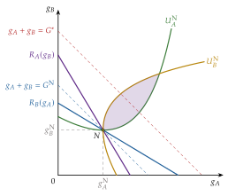
Fuente: elaboración propia a partir de Bergstrom, Blume y Varian (1986).
E. Anexo: el mecanismo de Clarke-Groves
Mecanismos de Groves. Con la regla de II.2.3 (\(d=1\) si \(\sum_i(\tilde{v}_i-c_i)\geq0\)), cada individuo \(i\) recibe una transferencia \[\tau_i=d\sum_{j\neq i}(\tilde{v}_j-c_j)+h_i(\tilde{v}_{-i}),\] donde \(h_i\) es cualquier función de lo que declaran los demás. Su ganancia es \(d\,(v_i-c_i)+\tau_i=d\,\left[(v_i-c_i)+\sum_{j\neq i}(\tilde{v}_j-c_j)\right]+h_i(\tilde{v}_{-i})\): el excedente total con su valor verdadero, más algo que no depende de lo que declara. Como el mecanismo maximiza ese excedente con los valores declarados, a \(i\) le conviene declarar la verdad: así el mecanismo decide como él querría (Groves, 1973). ∎
El pivote de Clarke: con \(h_i(\tilde{v}_{-i})=-\max\{S_{-i},0\}\), donde \(S_{-i}=\sum_{j\neq i}(\tilde{v}_j-c_j)\), la transferencia es \(\tau_i=d\,S_{-i}-\max\{S_{-i},0\}\leq0\): un impuesto, \(H_i=-\tau_i\), que es cero si \(i\) no cambia la decisión y \(|S_{-i}|\) si la cambia (Clarke, 1971). Es la fórmula (8).
El ejemplo de la mota (tabla 8), completo:
con la verdad, se construye; el vecino 3 paga 10 y sus ganancias netas son \(-60\), 50 y \(70-10=60\);
el vecino 1 no puede evitar la mota sin pagar 120 (más que los 60 que pierde);
el vecino 2 no gana nada exagerando: si declara 1.000, la mota se construye igual, sigue sin ser pivotal y paga 0;
el vecino 3 no gana nada infravalorando: si declara un valor neto de 15 en lugar de 70, la suma es 5, se construye y paga lo mismo, 10; si declara menos de 10, no se construye y pierde los 60 que ganaba.
Por qué el presupuesto no cuadra: lo recaudado no puede devolverse a los vecinos, porque lo que recibiera cada uno dependería de lo que pagan los demás y, por tanto, de su propia declaración, y volvería el incentivo a mentir. Green y Laffont (1977) demuestran que, con utilidades cuasilineales y valoraciones sin restringir, los mecanismos de Groves son los únicos en que decir la verdad es dominante y la decisión es eficiente, y que ninguno de ellos equilibra siempre el presupuesto. Con muchos individuos, el superávit esperado es pequeño.
Relación con otros temas: la subasta de segundo precio de Vickrey (1961) es un mecanismo de Clarke con un bien privado (quien gana paga el valor que su presencia quita al segundo) [ver tema 3.A.14]; y el teorema de Gibbard-Satterthwaite explica por qué hace falta el dinero y la cuasilinealidad [ver tema 3.A.24].
F. Anexo: cómo Elinor Ostrom resolvió la tragedia de los comunes
El problema. Un recurso común es rival y no excluible. Garrett Hardin (1968) lo ilustró con un pasto común: a cada pastor le conviene añadir una vaca más, porque se queda todo el beneficio y reparte entre todos el daño al pasto; si todos lo hacen, el pasto se agota. Es un dilema del prisionero con muchos jugadores [ver tema 3.A.14].
El modelo (Gordon, 1954): con \(N\) barcos en un caladero de libre acceso, la captura total es \(F(N)\), creciente y cóncava, y cada barco cuesta \(c\).
El óptimo maximiza \(F(N)-cN\): se añaden barcos hasta que la captura marginal iguala el coste, \(F'(N^*)=c\).
Con libre acceso, entran barcos mientras la captura media cubra el coste, \(F(N^L)/N^L=c\), y la renta del recurso desaparece.
Como \(F\) es cóncava, la captura media supera a la marginal y \(N^L>N^*\): sobreexplotación. Cada barco que entra reduce la captura de los demás y no lo tiene en cuenta: es una externalidad negativa.
Las soluciones clásicas: privatizar el recurso (convertirlo en bien privado) o que el Estado regule su uso (cuotas, licencias, vedas). Era una conclusión pesimista: sin una de las 2, el recurso se perdería.
La aportación de Ostrom. Elinor E. Ostrom (1990) documentó comunidades que gestionan sus recursos durante siglos sin privatizarlos ni depender del Estado, con reglas propias:
en Törbel (Suiza), una regla de 1517 impide llevar al pasto común de verano más vacas de las que cada vecino puede alimentar en invierno, lo que liga el uso del pasto común a un coste privado (E. Ostrom, 1990, 61-65; Netting, 1981);
las huertas de Valencia, Murcia y Orihuela reparten el agua de riego con turnos y jueces propios, como el Tribunal de las Aguas de Valencia;
encontró acuerdos parecidos en los bosques comunales de Japón, en los sistemas de riego de Filipinas, en las pesquerías de Alanya (Turquía) y en los acuíferos de Los Ángeles.
De esos casos extrae 8 principios de diseño de las instituciones que funcionan (E. Ostrom, 1990, cap. 3):
límites claros del recurso y de quién tiene derecho a usarlo;
reglas de uso adaptadas a las condiciones locales;
que quienes siguen las reglas participen en cambiarlas;
vigilancia por los propios usuarios o por quien responde ante ellos;
sanciones graduales según la gravedad y la reincidencia;
mecanismos de resolución de conflictos rápidos y baratos;
reconocimiento por las autoridades externas del derecho a organizarse;
en los recursos grandes, organización en niveles anidados.
Elinor Ostrom recibió en 2009 el Nobel de Economía, compartido con Oliver Williamson, «por su análisis de la gobernanza económica, especialmente de los bienes comunes» (The Nobel Prize, 2009). Fue la primera mujer en recibirlo; su formación era de ciencia política. Antes que ella, otros premiados no eran economistas de formación, como Herbert Simon, Nobel en 1978 (The Nobel Prize, 1978).
G. Anexo: qué estudia cada tema del bloque
Competencia perfecta en un mercado [ver tema 3.A.16]: equilibrio parcial, plazos y bienestar medido con excedentes; la lista común de supuestos de las estructuras de mercado.
Regulación [ver tema 3.A.20]: el poder de mercado y su regulación óptima, también con información asimétrica, y la teoría positiva de la regulación (captura).
Equilibrio general [ver tema 3.A.21]: la competencia perfecta en todos los mercados a la vez: excesos de demanda, ley de Walras, existencia, unicidad y estabilidad.
Teoremas del bienestar [ver tema 3.A.22]: el óptimo de Pareto, los 2 teoremas fundamentales con todos sus supuestos y su demostración, y el second best.
Este tema: los fallos de mercado por los que el equilibrio competitivo deja de ser eficiente (externalidades y bienes públicos), cómo puede intervenir el sector público y los fallos del propio sector público.
Funciones de bienestar social y elección colectiva [ver tema 3.A.24]: cómo elegir entre los óptimos y cómo decide la sociedad (votación, teorema de Arrow).
Cambio climático [ver tema 3.B.31]: la mayor externalidad global y los acuerdos y medidas para hacerle frente.
En el cuarto ejercicio, los mecanismos de decisión del sector público y la burocracia [ver tema 4.B.2], la evaluación de políticas [ver tema 4.B.6], la imposición indirecta y la fiscalidad verde [ver tema 4.B.13], el federalismo fiscal [ver tema 4.B.14] y la empresa pública [ver tema 4.B.15].
H. Anexo: aspectos para el test y preguntas del tribunal
Trampas habituales en el test
El impuesto pigouviano es igual al daño marginal en el óptimo, \(t^*=\mathrm{CMgE}(q^*)\), no en el equilibrio de mercado ni el daño medio.
Con información completa y una sola empresa, impuesto y estándar logran la misma eficiencia; difieren en el reparto (el impuesto recauda, el estándar deja una renta a la empresa). Con varias empresas de costes distintos, el estándar uniforme es más caro.
El teorema de Coase exige derechos bien definidos y costes de transacción nulos; la asignación de los derechos no afecta a la eficiencia, pero sí al reparto (y a la eficiencia si hay efectos renta). El nombre es de Stigler (1966).
Weitzman (1974): con incertidumbre sobre los costes de reducir, mejor fijar la cantidad si el daño marginal es más inclinado que el coste marginal de reducción.
Con bienes públicos la suma es vertical (se suman las disposiciones a pagar para una misma cantidad); con bienes privados, horizontal.
El equilibrio de Lindahl es óptimo de Pareto, pero no resuelve la revelación de preferencias.
En Clarke-Groves, decir la verdad es una estrategia (débilmente) dominante y la decisión es eficiente, pero el presupuesto no se equilibra (Green y Laffont, 1977); solo paga el pivotal.
Los «fallos del no mercado» son de Wolf (1979): internalidades, costes redundantes y crecientes, externalidades derivadas y desigualdad de poder. La paradoja de Condorcet (1785) es la falta de transitividad de la mayoría; el votante mediano decide si las preferencias son unimodales (Black, 1948), y su elección solo es eficiente si la valoración mediana coincide con la media.
La clasificación de los bienes por rivalidad y exclusión es de Vincent y Elinor Ostrom (1977); los bienes de club, de Buchanan (1965); la tragedia de los comunes, de Hardin (1968).
El simulador incluye preguntas de exámenes anteriores sobre este tema (sobre el impuesto pigouviano y el mecanismo VCG, entre otras).
Preguntas probables del tribunal
¿Por qué con una externalidad el equilibrio competitivo no es óptimo de Pareto? Escriba la condición de eficiencia en equilibrio general.
¿Es igual el bienestar con un impuesto pigouviano que con un estándar? ¿Y el reparto? ¿Qué pasa con varias empresas con costes de reducción distintos?
¿Por qué la asignación de los derechos no afecta a la eficiencia en el teorema de Coase? ¿Qué papel tiene la utilidad cuasilineal?
¿Cuándo preferiría un mercado de derechos a un impuesto sobre las emisiones?
¿Por qué se suman en vertical las disposiciones a pagar por un bien público?
¿Es el equilibrio de Lindahl óptimo de Pareto? ¿Por qué no resuelve el problema?
¿Por qué en Clarke-Groves decir la verdad es dominante? ¿Por qué el resultado no es óptimo de Pareto en sentido estricto?
¿Qué fallos del no mercado distingue Wolf? ¿Elige el votante mediano la cantidad eficiente de un bien público?
Ponga un ejemplo de inconsistencia temporal fuera de la política monetaria.
Preguntas tipo test
Preguntas de test sobre este tema, en el simulador de test de la web.
Bibliografía
Con mercados incompletos o información asimétrica, las externalidades pecuniarias sí pueden afectar a la eficiencia (Greenwald y Stiglitz, 1986).↩︎
La idea la apunta Marshall y la analiza a fondo Pigou (1912) en Wealth and Welfare, antecedente de The Economics of Welfare (1920), que es la referencia habitual.↩︎
Ronald Coase recibió el Nobel en 1991 «por su descubrimiento y clarificación de la importancia de los costes de transacción y los derechos de propiedad para la estructura institucional y el funcionamiento de la economía» (The Nobel Prize, 1991). Este artículo de 1960 es distinto del de 1937 sobre la naturaleza de la empresa [ver tema 3.A.15].↩︎
Es la misma negociación en el gráfico habitual de los manuales: el beneficio marginal de la acería, \(\mathrm{BMg}(q)=\overline{p}-\mathrm{CMgP}(q)\), decreciente, que se anula en \(q^c\), y el daño marginal a la piscifactoría, \(\mathrm{DMg}(q)\equiv\mathrm{CMgE}(q)\), creciente, que lo corta en \(q^*\). Las áreas no cambian: hasta \(q^*\), bajo \(\mathrm{BMg}\) queda lo que gana la acería, \(A+B+C\), y bajo \(\mathrm{DMg}\), el daño \(C\); entre \(q^*\) y \(q^c\), \(D\) bajo \(\mathrm{BMg}\) y \(D+E\) bajo \(\mathrm{DMg}\). Con derechos de la acería, la piscifactoría paga \(D\) si tiene todo el poder de negociación y \(D+E\) si lo tiene la acería; con derechos de la piscifactoría, la acería paga \(A+B+C\) si todo el poder es de la piscifactoría y \(C\) si es suyo. Con poder compartido, algo intermedio.
↩︎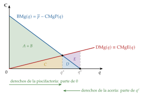
En una caja de Edgeworth con el nivel de la externalidad en abscisas y el dinero en ordenadas, la utilidad cuasilineal en el dinero hace que las curvas de indiferencia sean traslaciones verticales unas de otras: las tangencias están todas en el mismo nivel de la externalidad y la curva de contrato es una recta vertical en \(q^*\) (Mas-Colell, Whinston y Green, 1995, cap. 11.D).↩︎
El faro es el ejemplo de manual de bien público, pero Ronald Coase (1974) mostró que en Inglaterra muchos faros fueron privados durante siglos y se financiaban con un peaje que se cobraba a los barcos en el puerto: la exclusión se hacía en otro sitio. Bertrand (2006) matiza esa conclusión: el Estado intervenía en la fijación de los peajes.↩︎
Demostración. Sea \(S_{-i}=\sum_{j\neq i}(\tilde{v}_j-c_j)\) y \(d=1\) si se construye. El impuesto puede escribirse \(H_i=\max\{S_{-i},0\}-d\,S_{-i}\), de modo que la ganancia de \(i\) es \(d\,(v_i-c_i)-H_i=d\,[(v_i-c_i)+S_{-i}]-\max\{S_{-i},0\}\). El segundo término no depende de lo que declare \(i\); el primero es máximo si \(d=1\) cuando \((v_i-c_i)+S_{-i}\geq0\) y \(d=0\) en otro caso, que es justo lo que decide el mecanismo cuando \(i\) declara \(v_i\). Ninguna mentira puede mejorar ese resultado. ∎↩︎
James Buchanan recibió el Nobel en 1986 «por su desarrollo de las bases contractuales y constitucionales de la teoría de la toma de decisiones económicas y políticas» (The Nobel Prize, 1986).↩︎
Con expectativas racionales el ciclo no desaparece del todo, pero se traslada a la composición del presupuesto: más gasto visible antes de las elecciones (Rogoff, 1990). Un precedente de la idea es Kalecki (1943).↩︎
El político acepta cualquier programa cuyo beneficio total \(B(G)\) cubra su coste total \(C(G)\). El nivel eficiente, \(G^*\), iguala beneficio y coste marginales; el burócrata elige el mayor \(G\) con \(B(G)=C(G)\), \(G'>G^*\), y todo el excedente se pierde en el exceso de tamaño.
↩︎
Las estimaciones de su coste son muy dispares; Krueger (1974) lo cifra en torno al 7 % de la renta nacional de la India en 1964 y al 15 % del PNB de Turquía en 1968, solo por las licencias de importación.↩︎